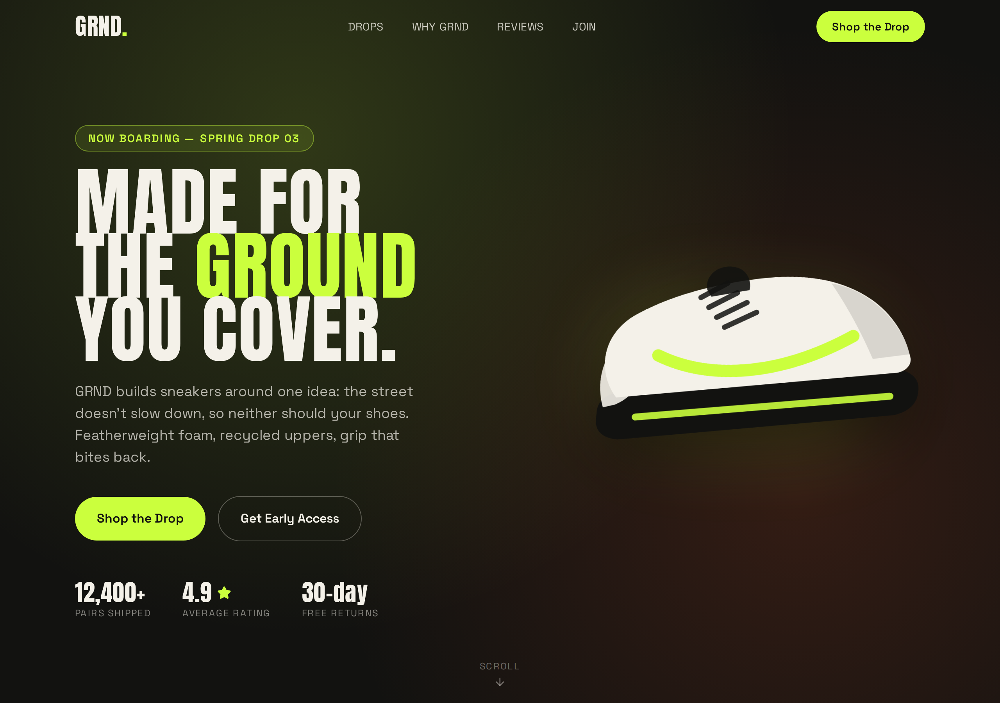
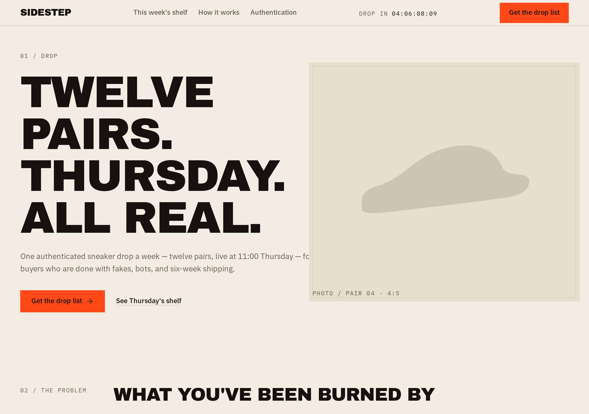
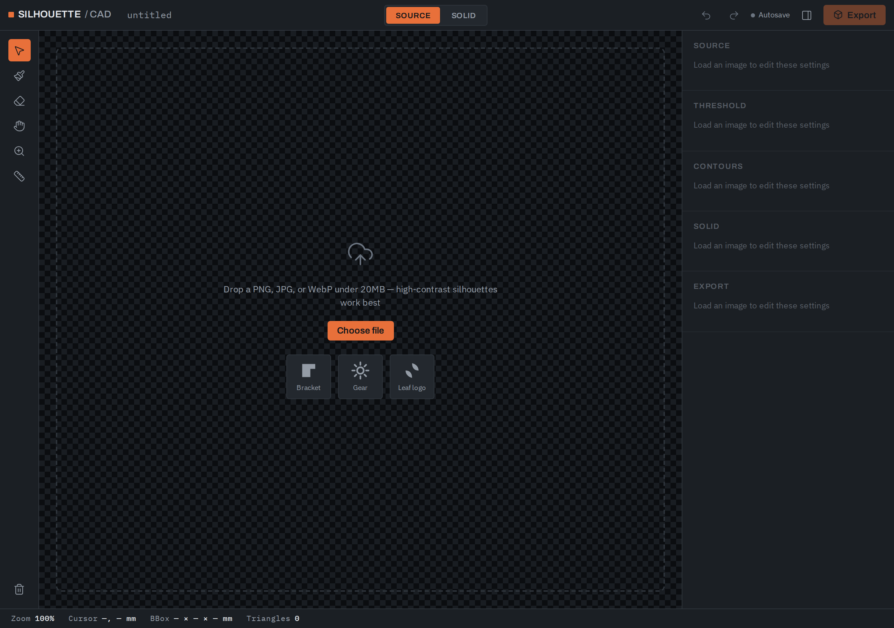
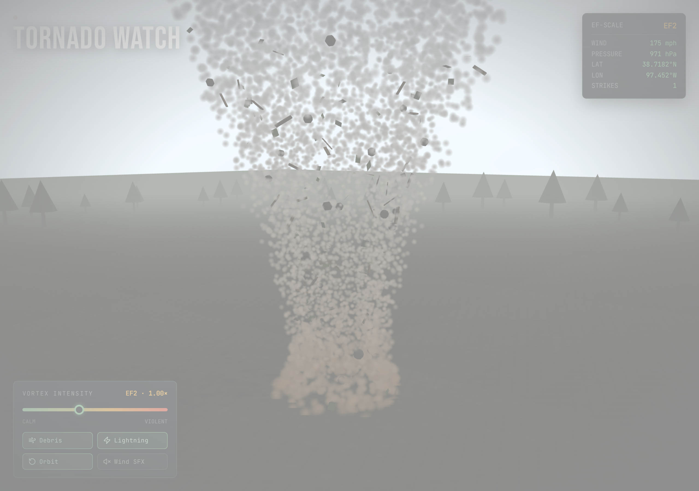
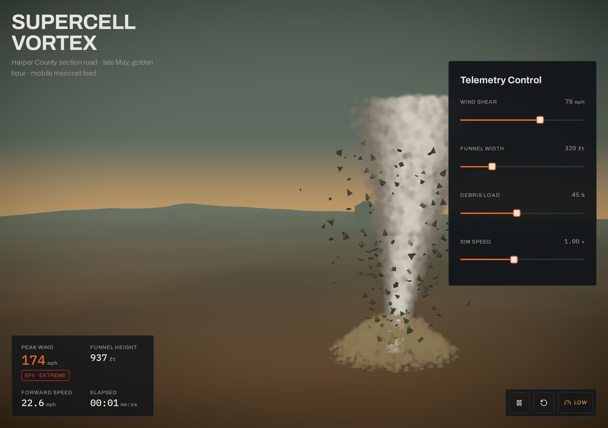
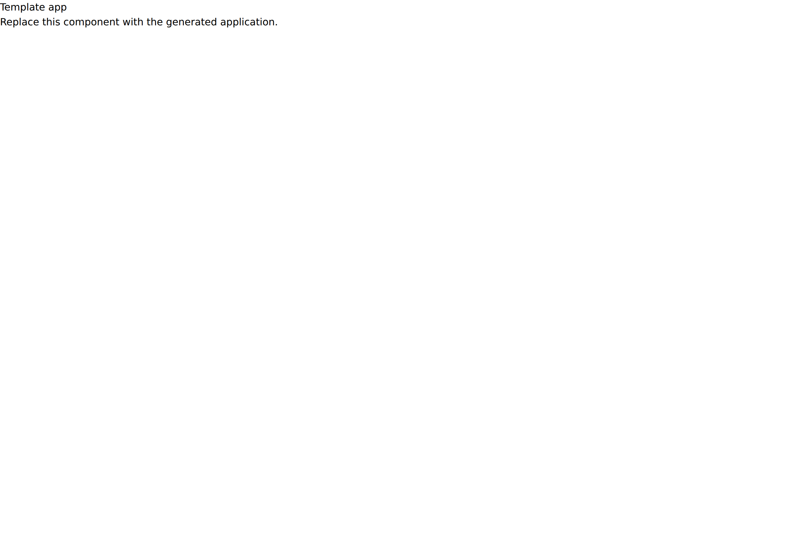

<!doctype html>
<html lang="en">
<head>
<meta charset="utf-8">
<meta name="viewport" content="width=device-width,initial-scale=1">
<title>Run rewrites-v1-run1 — Prompt rewrites — before &amp; after</title>
<style>
*,*::before,*::after{box-sizing:border-box}
:root{
  color-scheme:light dark;
  --bg:#fbfaf7; --surface:#fff; --line:#e6e2d9; --ink:#1c1a17; --muted:#6b6459;
  --ok:#1f7a4d; --warn:#96650d; --bad:#a3302a; --accent:#8a4b2a;
  --radius:10px;
}
@media (prefers-color-scheme:dark){
  :root{--bg:#141311;--surface:#1d1b18;--line:#33302a;--ink:#f0ece4;--muted:#9d968a;
        --ok:#5fc08c;--warn:#e0ac4d;--bad:#e8837c;--accent:#d99a6c}
}
:root[data-theme="dark"]{--bg:#141311;--surface:#1d1b18;--line:#33302a;--ink:#f0ece4;
  --muted:#9d968a;--ok:#5fc08c;--warn:#e0ac4d;--bad:#e8837c;--accent:#d99a6c}
:root[data-theme="light"]{--bg:#fbfaf7;--surface:#fff;--line:#e6e2d9;--ink:#1c1a17;
  --muted:#6b6459;--ok:#1f7a4d;--warn:#96650d;--bad:#a3302a;--accent:#8a4b2a}

body{margin:0;background:var(--bg);color:var(--ink);
  font:16px/1.55 ui-serif,Georgia,"Iowan Old Style",serif;overflow-x:hidden}
.wrap{max-width:1080px;margin:0 auto;padding:48px 24px 96px}
h1{font-size:clamp(28px,4vw,40px);line-height:1.15;margin:0 0 6px;letter-spacing:-.02em}
h2{font-size:20px;margin:0 0 4px;letter-spacing:-.01em}
.sub{color:var(--muted);margin:0 0 32px;font-size:15px}
.mono{font-family:ui-monospace,SFMono-Regular,Menlo,monospace;font-size:13px}

.stats{display:flex;flex-wrap:wrap;gap:10px;margin:0 0 40px;padding:0;list-style:none}
.stat{background:var(--surface);border:1px solid var(--line);border-radius:var(--radius);
  padding:12px 16px;min-width:120px}
.stat b{display:block;font-size:22px;font-variant-numeric:tabular-nums;line-height:1.2}
.stat span{color:var(--muted);font-size:12px;text-transform:uppercase;letter-spacing:.07em;
  font-family:ui-sans-serif,system-ui,sans-serif}

.card{background:var(--surface);border:1px solid var(--line);border-radius:var(--radius);
  margin:0 0 28px;overflow:hidden}
.card-head{display:flex;flex-wrap:wrap;gap:12px;align-items:baseline;
  justify-content:space-between;padding:20px 22px 14px}
.badge{font-family:ui-sans-serif,system-ui,sans-serif;font-size:11px;font-weight:600;
  letter-spacing:.06em;text-transform:uppercase;padding:4px 9px;border-radius:99px;
  border:1px solid currentColor;white-space:nowrap}
.badge.ok{color:var(--ok)} .badge.warn{color:var(--warn)} .badge.bad{color:var(--bad)}

.card-body{display:grid;grid-template-columns:minmax(0,1fr) minmax(0,1.1fr);gap:22px;
  padding:0 22px 22px}
@media (max-width:820px){.card-body{grid-template-columns:1fr}}

.prompt{white-space:pre-wrap;background:color-mix(in srgb,var(--ink) 4%,transparent);
  border:1px solid var(--line);border-radius:8px;padding:14px 16px;font-size:14px;
  max-height:340px;overflow:auto;margin:0}
.label{font-family:ui-sans-serif,system-ui,sans-serif;font-size:11px;font-weight:600;
  letter-spacing:.08em;text-transform:uppercase;color:var(--muted);margin:0 0 7px}

/* Fixed aspect so cards stay uniform regardless of screenshot height. */
.shot{display:block;width:100%;aspect-ratio:16/10;object-fit:cover;object-position:top;
  border:1px solid var(--line);border-radius:8px;
  background:color-mix(in srgb,var(--ink) 4%,transparent)}
.shot-missing{display:grid;place-items:center;aspect-ratio:16/10;border:1px dashed var(--line);
  border-radius:8px;padding:16px;text-align:center;color:var(--muted);font-size:14px}

.actions{display:flex;flex-wrap:wrap;gap:10px;align-items:center;margin-top:14px}
a.btn{display:inline-block;font-family:ui-sans-serif,system-ui,sans-serif;font-size:14px;
  font-weight:600;text-decoration:none;color:var(--bg);background:var(--accent);
  padding:9px 16px;border-radius:7px;transition:transform .12s ease,opacity .12s ease}
a.btn:hover{transform:translateY(-1px);opacity:.92}
a.btn.ghost{background:transparent;color:var(--accent);border:1px solid var(--accent)}
a.btn[aria-disabled="true"]{opacity:.4;pointer-events:none}
:focus-visible{outline:2px solid var(--accent);outline-offset:2px}

.meta{display:flex;flex-wrap:wrap;gap:6px 18px;margin:14px 0 0;padding:0;list-style:none;
  color:var(--muted);font-family:ui-sans-serif,system-ui,sans-serif;font-size:12.5px}
.meta b{color:var(--ink);font-weight:600;font-variant-numeric:tabular-nums}

details{margin-top:14px;border-top:1px solid var(--line);padding-top:12px}
summary{cursor:pointer;font-family:ui-sans-serif,system-ui,sans-serif;font-size:13px;
  color:var(--muted);font-weight:600}
summary:hover{color:var(--ink)}
details pre{white-space:pre-wrap;font-size:12.5px;margin:10px 0 0;padding:12px;
  background:color-mix(in srgb,var(--ink) 5%,transparent);border-radius:7px;
  max-height:300px;overflow:auto}
.err{color:var(--bad)}
footer{margin-top:56px;padding-top:20px;border-top:1px solid var(--line);
  color:var(--muted);font-size:13px;font-family:ui-sans-serif,system-ui,sans-serif}

/* --- A/B comparison mode --- */
.pair{border:1px solid var(--line);border-radius:var(--radius);background:var(--surface);
  margin:0 0 30px;overflow:hidden}
.pair-head{display:flex;flex-wrap:wrap;gap:6px 14px;align-items:baseline;
  padding:20px 22px 16px;border-bottom:1px solid var(--line)}
.pair-head h2{margin:0}
.pair-head .note{color:var(--muted);font-size:14px;font-style:italic}
.arms{display:grid;grid-template-columns:1fr 1fr;gap:0}
@media (max-width:860px){.arms{grid-template-columns:1fr}}
.arm{padding:20px 22px 22px}
.arm+.arm{border-left:1px solid var(--line)}
@media (max-width:860px){.arm+.arm{border-left:0;border-top:1px solid var(--line)}}
.arm-label{display:flex;flex-wrap:wrap;gap:10px;align-items:center;margin:0 0 12px}
.arm-label b{font-family:ui-sans-serif,system-ui,sans-serif;font-size:11px;font-weight:700;
  letter-spacing:.1em;text-transform:uppercase}
.arm-before b{color:var(--muted)}
.arm-after b{color:var(--accent)}
.wordcount{font-family:ui-monospace,Menlo,monospace;font-size:11.5px;color:var(--muted)}

table.cmp{width:100%;border-collapse:collapse;font-size:14px;margin:0 0 40px;
  font-family:ui-sans-serif,system-ui,sans-serif}
table.cmp th{text-align:left;font-size:11px;letter-spacing:.07em;text-transform:uppercase;
  color:var(--muted);font-weight:600;padding:0 12px 8px 0;border-bottom:1px solid var(--line)}
table.cmp td{padding:9px 12px 9px 0;border-bottom:1px solid var(--line);
  font-variant-numeric:tabular-nums}
table.cmp td.name{font-family:ui-monospace,Menlo,monospace;font-size:12.5px}
table.cmp .delta{color:var(--muted);font-size:12.5px}
table.cmp .up{color:var(--ok)} table.cmp .down{color:var(--bad)}
</style>
</head>
<body>
<div class="wrap">
  <header>
    <h1>Prompt rewrites — before &amp; after</h1>
    <p class="sub">
      Run <span class="mono">rewrites-v1-run1</span> ·
      finished 2026-07-26T05:11:14.393796+00:00<br>
      Six prompts from the web_prompt_rewrites_pipeline artifact, each run twice: once exactly as a person typed it, and once with the appended &lt;DESIGN_INSTRUCTIONS&gt; block. Same model, same harness, same system prompt — the only variable is the prompt itself.
    </p>
    <ul class="stats"><li class="stat"><b>3/12</b><span>Apps built</span></li><li class="stat"><b>claude-sonnet-5</b><span>Model</span></li><li class="stat"><b>high</b><span>Effort</span></li><li class="stat"><b>452,005</b><span>Output tokens</span></li><li class="stat"><b>$15.41</b><span>Est. cost</span></li><li class="stat"><b>1704s</b><span>Wall clock</span></li></ul>
  </header>
  <main>
    
    <table class="cmp">
      <thead><tr>
        <th>Pair</th><th>Words in<br>before</th><th>Words in<br>after</th>
        <th>Built<br>before</th><th>Built<br>after</th>
        <th>Iters<br>before</th><th>Iters<br>after</th>
        <th>Out tok<br>before</th><th>Out tok<br>after</th>
        <th>Cost<br>before</th><th>Cost<br>after</th>
      </tr></thead>
      <tbody><tr><td class='name'>sneaker-store-landing</td><td>10</td><td>1,786</td><td><span class="up">yes</span></td><td><span class="up">yes</span></td><td>19</td><td>42</td><td>19,025</td><td>48,623</td><td>$0.49</td><td>$1.59</td></tr><tr><td class='name'>image-to-3d-cad</td><td>9</td><td>1,954</td><td><span class="down">no</span></td><td><span class="up">yes</span></td><td>6</td><td>90</td><td>35,574</td><td>144,173</td><td>$0.58</td><td>$6.05</td></tr><tr><td class='name'>tornado-simulation</td><td>8</td><td>1,638</td><td><span class="up">yes</span></td><td><span class="up">yes</span></td><td>33</td><td>74</td><td>38,177</td><td>95,216</td><td>$1.11</td><td>$3.62</td></tr><tr><td class='name'>vampire-slayer-rpg</td><td>10</td><td>1,924</td><td><span class="up">yes</span></td><td><span class="down">no</span></td><td>9</td><td>1</td><td>71,217</td><td>0</td><td>$1.98</td><td>$0.00</td></tr><tr><td class='name'>personal-tax-tool</td><td>7</td><td>1,586</td><td><span class="down">no</span></td><td><span class="down">no</span></td><td>1</td><td>1</td><td>0</td><td>0</td><td>$0.00</td><td>$0.00</td></tr><tr><td class='name'>bitcoin-wallet</td><td>6</td><td>1,647</td><td><span class="down">no</span></td><td><span class="down">no</span></td><td>1</td><td>1</td><td>0</td><td>0</td><td>$0.00</td><td>$0.00</td></tr></tbody>
    </table>
    <section class="pair" id="sneaker-store-landing">
      <div class="pair-head">
        <h2>Sneaker Store Landing</h2>
        <span class="mono" style="color:var(--muted)">sneaker-store-landing</span>
        <span class="note">Shoebox and shipping-label print</span>
      </div>
      <div class="arms">
        
      <div class="arm arm-before">
        <p class="arm-label">
          <b>As typed</b>
          <span class="badge ok">Built</span>
          <span class="wordcount">10 words in</span>
        </p>
        <a href="../../apps/rewrites-v1-sneaker-store-landing-before/"></a>
        <div class="actions">
          <a class="btn" href="../../apps/rewrites-v1-sneaker-store-landing-before/">Open the app</a>
          <a class="btn ghost" href="../../apps/rewrites-v1-sneaker-store-landing-before/" target="_blank" rel="noopener">New tab</a>
        </div>
        <ul class="meta">
          <li>Iterations <b>19</b></li>
          <li>Duration <b>233.8s</b></li>
          <li>Output <b>19,025</b> tok</li>
          <li>Cost <b>$0.49</b></li>
        </ul>
        <details>
          <summary>Prompt — as typed (10 words)</summary>
          <pre>Build me a landing page for my sneaker store startup</pre>
        </details>
        <details><summary>Agent's closing message</summary><pre>Build passes cleanly. The landing page is complete.

## What I built

A single-page landing site for **GRND**, a fictional streetwear sneaker startup, in dark charcoal + acid-lime + blaze-orange with **Anton** (bold condensed display) headlines and **Space Grotesk** body text for a poster-y, streetwear feel rather than a generic SaaS look.

Sections (top to bottom):
- **Sticky navbar** with mobile hamburger menu
- **Hero** — bold split-line headline, stats row, floating hand-drawn SVG sneaker illustration with a glow + slow float animation
- **Scrolling marquee** ticker strip (pauses on hover)
- **Why GRND** — 4 feature cards (foam, recycled materials, grip, small-batch drops) with lucide icons
- **Featured Drops** — 4 product cards, each with its own uniquely recolored SVG sneaker (built as a reusable `SneakerMark` component, no external images/network calls), status badges (New/Limited/Restocked/Drops Fri), and working &quot;Notify Me&quot; buttons that toggle to a confirmed state
- **Reviews** — star rating + 3 testimonial cards
- **Join the waitlist** — functional email form with validation, saves a running waitlist count to `localStorage` and shows a persistent &quot;you&#x27;re #N on the list&quot; confirmation
- **Footer** with link columns and social icons

Everything is client-side only, responsive from 360px up, and keyboard-focusable with visible focus rings. `npm run build` completes with no TypeScript or bundler errors.

To review: open the app and try the mobile menu at a narrow width, click &quot;Notify Me&quot; on any of the four drop cards, and submit an email in the waitlist form at the bottom to see the confirmation state.</pre></details>
      </div>
        
      <div class="arm arm-after">
        <p class="arm-label">
          <b>As rewritten</b>
          <span class="badge ok">Built</span>
          <span class="wordcount">1,786 words in</span>
        </p>
        <a href="../../apps/rewrites-v1-sneaker-store-landing-after/"></a>
        <div class="actions">
          <a class="btn" href="../../apps/rewrites-v1-sneaker-store-landing-after/">Open the app</a>
          <a class="btn ghost" href="../../apps/rewrites-v1-sneaker-store-landing-after/" target="_blank" rel="noopener">New tab</a>
        </div>
        <ul class="meta">
          <li>Iterations <b>42</b></li>
          <li>Duration <b>534.4s</b></li>
          <li>Output <b>48,623</b> tok</li>
          <li>Cost <b>$1.59</b></li>
        </ul>
        <details>
          <summary>Prompt — as rewritten (1,786 words)</summary>
          <pre>Build me a landing page for my sneaker store startup

&lt;DESIGN_INSTRUCTIONS&gt;
## Product read

A landing page for a curated sneaker store that runs one authenticated drop a week. Audience: 18–34 sneaker buyers who already know what they want and have been burned by fakes, bots, and slow shipping. The page exists to produce one action: **join the drop list** (email capture) with a secondary path to browse this Thursday&#x27;s shelf. The objection to answer: &quot;is this pair real, and will I actually get it?&quot; — so authentication and stock counts are design elements, not fine print. First version is one scrolling page, seven sections, no cart, no PDP, no account. Brand name to use throughout: **SIDESTEP**. Model names are in-house inventions (e.g. &quot;Pair 04 — Court Runner, Bone/Rust&quot;); no real brand names or logos anywhere.


## Visual direction

**Shoebox and shipping-label print** — because trust here comes from looking like inventory that was checked, boxed, and labelled by a person, not like a startup deck. Anchors: kraft cardboard box side panel; a thermal shipping label with barcode and size run; a rubber ink stamp reading AUTHENTICATED; a 1970s sports-goods catalogue size table. Flat print surfaces only — separation comes from hairlines, background tint shifts, and space. No blurred shadows anywhere on the page.


## Type

- **Display:** Archivo Black (Google Fonts / `@fontsource/archivo-black`), uppercase, tracking `-0.03em` at 64px+, `-0.02em` at 40px. Fallback: `&quot;Archivo Black&quot;, &quot;Helvetica Neue&quot;, Arial, sans-serif`.
- **Body &amp; UI:** IBM Plex Sans (`@fontsource/ibm-plex-sans`), 400/500/600. Fallback: `&quot;IBM Plex Sans&quot;, Helvetica, Arial, sans-serif`.
- **Mono:** IBM Plex Mono (`@fontsource/ibm-plex-mono`) for prices, SKUs, size runs, stock counts, the drop countdown, and all micro-labels. Tabular lining figures on every number that stacks or ticks.
- Scale: 13 / 15 / 17 / 21 / 28 / 40 / 64 / 96. H1 96px desktop → 40px at 640px. Section heads 40px desktop → 28px. Body 17px / line-height 1.6, measure capped at 68 characters. Micro-labels 13px mono, uppercase, tracking `+0.08em`. Headings line-height 0.95.
- No letterspaced all-caps body copy. Uppercase is reserved for display headings and mono micro-labels.


## Color &amp; surfaces

Light only, no theme toggle.

- `--kraft` page background `#F3EDE3`
- `--label` raised surface (cards, label blocks) `#FFFBF4`
- `--box` secondary tint band `#E7DDCC`
- `--ink` primary text `#14110E`
- `--ink-muted` `#6B6152`
- `--hairline` `#D8CDBB`
- `--accent` safety orange `#FF4A17` — primary CTA fill, drop countdown digits, the stamp
- `--panel` dark section background `#14110E` with text `#F3EDE3`
- Semantic: `--in-stock` `#1F6F4A`, `--low` `#A96A0B`, `--sold` `#B3271A`. Each is paired with a word (&quot;IN STOCK 6&quot;, &quot;LOW 2&quot;, &quot;SOLD OUT&quot;) — never colour alone. Body text `#14110E` on `#F3EDE3` clears 4.5:1; muted text is used only at 15px+. Loud colour is allowed in exactly two places: the primary CTA button and the countdown numerals. Radius: 2px everywhere, no exceptions.


## Layout &amp; structure

12 columns, 1240px max content width, 24px gutters, 8px base spacing scale (8/16/24/32/48/64/96/128). Section rhythm 128px desktop, 64px at mobile. Signature structural move: an **asymmetric 7/5 hero** where the product plate bleeds off the right edge of the viewport and every section below hangs a 13px mono index label (`01 / DROP`, `02 / THE PROBLEM`) in the left margin gutter, ledger-style, aligning down the whole page.

Sections top to bottom:

1. **Sticky nav** (56px, hairline bottom): SIDESTEP wordmark, three links, live drop countdown in mono, orange CTA button.
2. **Hero** — H1 claim (&quot;Twelve pairs. Thursday. All real.&quot;), one-sentence subhead naming what it is and who for, primary CTA &quot;Get the drop list&quot;, secondary text link &quot;See Thursday&#x27;s shelf&quot;. Product plate right, bleeding off-canvas. Hero ends 100px above the fold so section 02 peeks.
3. **The problem** — three ledger rows (not cards, not icons): hairline-separated rows, each a mono label + one plain sentence about fakes, bots, and 6-week shipping.
4. **This Thursday&#x27;s shelf** — horizontal scroll-snap row of 8 pair cards, each a shipping-label composition: 4:5 photo plate, model name, colourway, mono price, size run as a row of boxed numbers with unavailable sizes struck through, stock chip. Overflow is a deliberate design element — the 8th card is half-visible at 1240px.
5. **How it works** — three numbered steps on the dark `--panel` band using real nouns: *Authenticated in-shop (7-point check)* → *Photographed on the actual pair* → *Shipped same day from the Crosstown counter*.
6. **Proof, no testimonials** — a two-column spread: left, the 7-point authentication checklist as a stamped receipt with mono line items; right, a founder note of 60–80 words signed with a name and the shop address. No logo strip, no invented quotes, no statistics.
7. **Close** — full-width `--box` band: restated CTA, email capture inline, friction removers in mono (&quot;One email per drop.&quot; / &quot;No card. No bots.&quot; / &quot;Unsubscribe in one click.&quot;), then a compact 3-column footer.

Breakpoints 640 / 900 / 1280. Below 1280 the hero plate stops bleeding and clamps to the grid. Below 900 the hero stacks (plate above copy, plate becomes 16:10), margin index labels move inline above section heads, the shelf cards go to 84vw width, proof spread becomes single column. Below 640 nav links collapse into a full-height sheet; the countdown stays visible in the bar. Touch targets ≥44px. No horizontal page scroll at 390px — only the shelf scrolls sideways.


## Images

No photography exists. Every product plate is a blocked-out composition, not a broken image: `--box` tinted rectangle at 4:5 with a 1px `--hairline` inset, a centred flat-fill sneaker silhouette in `--ink` at 12% opacity, and a mono caption bottom-left (`PHOTO / PAIR 04 · 4:5`). The founder-note column uses the same treatment at 3:2. Reserve all dimensions with `aspect-ratio` so nothing shifts.


## Motion &amp; feedback

- Scroll reveals: 480ms `ease-out`, 16px upward travel, 70ms stagger capped at 6 items, fired once per element, never on re-entry.
- Hover on pair card: 120ms `ease-out`, 2px `translateY(-2px)` plus hairline darkening to `#14110E`. Hover on nav links and text CTAs: 120ms colour only. Never `ease-in-out` on hover.
- Button press: `scale(0.985)`, 90ms.
- Mobile nav sheet: 240ms `cubic-bezier(0.2, 0, 0, 1)` in from the right, 170ms out.
- Shelf: CSS scroll-snap, no JS-animated carousel, no autoplay.
- Signature moment: the AUTHENTICATED stamp in section 06 rotates from `-8deg` to `-3deg` and fades in over 320ms when the receipt enters view. That is the only decorative animation on the page.
- Countdown: animate nothing — swap the mono digits in place with fixed tabular width. Never animate the headline text or the CTA.
- `prefers-reduced-motion: reduce`: all reveals render at final state instantly, stamp appears without rotation, sheet cross-fades in 120ms. Focus rings unchanged.


## Components &amp; states

Nav + mobile sheet, countdown ticker, hero, ledger row, pair card, size-run chip set, stock chip, numbered step block, receipt/checklist block, founder note, email capture, footer.

States to design:

- **Email capture:** idle (single field + orange button, inline helper); submitting (button holds its exact width, label becomes &quot;Sending…&quot;, field locked, 500ms mocked delay); success (field row is replaced in place by a stamped line &quot;On the list. Thursday, 11:00.&quot; — no redirect, no toast); error (`--sold` hairline on the field plus a plain-language message: &quot;That address is missing an @ — check it and send again.&quot;). Address goes to a mocked promise; state persists in `localStorage` so a returning visitor sees the success state.
- **Pair card:** in stock, low (2 or fewer), sold out (plate desaturated to grayscale, size chips struck through, &quot;SOLD OUT&quot; in `--sold`, card not hoverable).
- **Countdown:** normal, under 1 hour (numerals switch to `--accent` fill block), drop live (&quot;LIVE NOW&quot; replaces digits), post-drop (&quot;Next drop: Thu 11:00&quot;).
- **Ugly edges:** longest model name wraps to two lines without changing card height (reserve 2 lines); prices render correctly at 4 digits (`$1,240`); a size run of 14 chips wraps to two rows; the shelf must look intentional with 3 pairs as well as 12.
- Every interactive element is a real `button`/`a` with a 2px `--ink` focus ring at 2px offset.


## Stack notes

DOM only. Tailwind with the palette, type scale, and 8px spacing defined once as theme tokens; no inline hex literals. Fonts via `@fontsource` with `font-display: swap` and preloaded Archivo Black weight so the 96px headline does not reflow. Reveals via a single shared IntersectionObserver hook — do not add framer-motion for this page. Icons: Lucide only (arrow-right, x, menu, check), 1.5px stroke, never emoji. All content — pairs, sizes, prices, steps, checklist, footer links — lives in one seeded data module so the shelf renders from an array. Email submit is a mocked promise with an artificial 500ms latency and a forced-error path when the field lacks `@`. Budget: initial JS under 120KB gzipped, LCP under 2.5s on mid-range mobile (the hero plate is CSS, so it should paint with the first frame), zero cumulative layout shift.


## Do not

- Do not ship a centred hero with three icon cards below it; the hero is asymmetric and there are no feature cards on this page.
- Do not invent testimonials, customer logos, press mentions, or &quot;10,000 sneakerheads&quot; statistics.
- Do not use real sneaker brand names, logos, or silhouettes traceable to a real SKU.
- Do not add box-shadows, blurred glows, glassmorphic panels, or gradient fills; separation is hairlines, tint bands, and space only.
- Do not make the hero 100vh — section 02 must be visible by 100px on a 900px-tall viewport.
- Do not use a marquee of logos, an autoplaying video, or an on-load modal.
- Do not put uniform 24px padding on everything; label-to-value gaps are 8px, field-to-field 24px, section-to-section 128px.
- Do not animate the countdown digits, the headline, or anything the cursor is aiming at.


## Done when

- A stranger can say &quot;curated authenticated sneakers, one drop a week&quot; within five seconds of landing.
- Twelve concrete pairs with prices, size runs, and stock counts are visible without leaving the page; the shelf scrolls with snap on trackpad and touch.
- Every number on the page (prices, sizes, stock, countdown) uses tabular mono figures and does not shift width as it changes.
- The email capture demonstrates all four states, including the error path, and the success state survives a page reload.
- At 390px wide there is no horizontal page scroll, the nav sheet opens and closes with Escape, and the countdown remains readable in the bar.
- Each of the seven sections makes a different point; deleting any one removes information found nowhere else.
- Every interactive element shows a visible 2px focus ring and tab order matches visual order.
- With `prefers-reduced-motion: reduce`, nothing on the page moves and all content is immediately at final position.
&lt;/DESIGN_INSTRUCTIONS&gt;
</pre>
        </details>
        <details><summary>Agent's closing message</summary><pre>## Done — SIDESTEP landing page

Built a single-page, seven-section landing page for the sneaker drop startup, in the shipping-label/kraft-box print aesthetic requested.

**What&#x27;s implemented:**
- **Sticky nav** — wordmark, links, a live mono countdown to next Thursday 11:00 (with normal/under-1-hour/live/post-drop states), orange CTA, and a full-height mobile sheet (Escape + backdrop to close, focus moves to close button).
- **Hero** — asymmetric 7/5 layout, 96px Archivo Black headline, product plate bleeding off the right edge above 1280px, clamping to grid at 900–1280px, stacking 16:10 below 900px.
- **The problem** — three hairline ledger rows (fakes / bots / shipping), no cards or icons.
- **This Thursday&#x27;s shelf** — all 12 seeded pairs (from `src/data/pairs.ts`) as shipping-label cards: 4:5 placeholder plate, price in tabular mono (including the $1,240 four-digit case and the two-line-wrapping long name), size-run chips with strikethroughs, and color-coded stock chips (in-stock/low/sold-out, sold-out cards desaturated and non-hoverable). Scrolls with native CSS scroll-snap.
- **How it works** — dark panel, three numbered steps.
- **Proof** — a stamped 7-point authentication receipt (the rotating &quot;AUTHENTICATED&quot; stamp fires once on scroll-into-view) beside a founder note with a placeholder 3:2 plate.
- **Close** — restated CTA, working email capture with all four states (idle/submitting/success/error, mocked 500ms promise, `@`-validation, success persisted via `localStorage` across reloads), friction-remover copy, and a 3-column footer.

All numerals use IBM Plex Mono with tabular figures; reveals run on one shared IntersectionObserver hook with capped stagger; `prefers-reduced-motion` disables all of it. No real brand names/logos, no photography (all product plates are the specified blocked-out tint + silhouette + caption composition).

**Build:** `npm run build` and `npm run typecheck` both pass cleanly; JS is ~53KB gzipped, well under budget.

**To review:** open the page, try the email field with and without `@`, reload to confirm the success state survives, resize through 1280/900/640px to see the hero/shelf/proof breakpoint changes, and open the mobile menu under 640px to check the sheet and Escape-to-close.</pre></details>
      </div>
      </div>
    </section>
    <section class="pair" id="image-to-3d-cad">
      <div class="pair-head">
        <h2>Image to 3D CAD</h2>
        <span class="mono" style="color:var(--muted)">image-to-3d-cad</span>
        <span class="note">Machine-shop dark instrument</span>
      </div>
      <div class="arms">
        
      <div class="arm arm-before">
        <p class="arm-label">
          <b>As typed</b>
          <span class="badge warn">Never started</span>
          <span class="wordcount">9 words in</span>
        </p>
        <div class="shot-missing">No screenshot — the app did not build, or Playwright was unavailable.</div>
        <div class="actions">
          <a class="btn" href="../../apps/rewrites-v1-image-to-3d-cad-before/" aria-disabled="true">Open the app</a>
          <a class="btn ghost" href="../../apps/rewrites-v1-image-to-3d-cad-before/" target="_blank" rel="noopener" aria-disabled="true">New tab</a>
        </div>
        <ul class="meta">
          <li>Iterations <b>6</b></li>
          <li>Duration <b>378.7s</b></li>
          <li>Output <b>35,574</b> tok</li>
          <li>Cost <b>$0.58</b></li>
        </ul>
        <details>
          <summary>Prompt — as typed (9 words)</summary>
          <pre>Make me an image to 3D CAD web app</pre>
        </details>
        <details><summary>Agent's closing message</summary><pre>App root is the current directory already. Let&#x27;s install fonts there.</pre></details><details open><summary class="err">Build output</summary><pre class="err">
&gt; webapp-template@0.0.0 build
&gt; tsc -b --noCheck &amp;&amp; vite build

vite v5.4.21 building for production...
transforming...
✓ 31 modules transformed.
rendering chunks...
computing gzip size...
dist/index.html                   0.47 kB │ gzip:  0.29 kB
dist/assets/index-Wr495W1c.css    4.40 kB │ gzip:  1.48 kB
dist/assets/index-d5P0hY9K.js   142.77 kB │ gzip: 45.84 kB
✓ built in 782ms
</pre></details><details><summary class="err">Agent error</summary><pre class="err">stopped: max_tokens</pre></details>
      </div>
        
      <div class="arm arm-after">
        <p class="arm-label">
          <b>As rewritten</b>
          <span class="badge warn">Agent stopped early</span>
          <span class="wordcount">1,954 words in</span>
        </p>
        <a href="../../apps/rewrites-v1-image-to-3d-cad-after/"></a>
        <div class="actions">
          <a class="btn" href="../../apps/rewrites-v1-image-to-3d-cad-after/">Open the app</a>
          <a class="btn ghost" href="../../apps/rewrites-v1-image-to-3d-cad-after/" target="_blank" rel="noopener">New tab</a>
        </div>
        <ul class="meta">
          <li>Iterations <b>90</b></li>
          <li>Duration <b>1445.7s</b></li>
          <li>Output <b>144,173</b> tok</li>
          <li>Cost <b>$6.05</b></li>
        </ul>
        <details>
          <summary>Prompt — as rewritten (1,954 words)</summary>
          <pre>Make me an image to 3D CAD web app

&lt;DESIGN_INSTRUCTIONS&gt;
## Product read

A browser tool that turns one bitmap into one downloadable solid. The pipeline is explicit: **image in → threshold &amp; contour trace → extrude to a watertight mesh solid → inspect in 3D → export STL/OBJ/GLB (millimetres)**. The user is a maker with a logo, a gasket outline, or a stencil who wants a printable/importable body in under a minute.

First version does exactly one conversion: **silhouette extrusion** (threshold → marching-squares contours → simplification → extrude with optional bevel). No depth-map relief, no photogrammetry, no parametric history, no STEP. The product must state this in-product: a persistent line in the export panel reading &quot;Mesh solid (triangles), not a parametric CAD body — STEP/BREP unsupported.&quot; Honesty about output fidelity is a design requirement, not a caveat.


## Visual direction

**Machine-shop dark instrument** — the chrome should feel like a CNC controller bezel, because the user is reading dimensions and trusting a number, not browsing. Anchors: Bridgeport control panels, anodised aluminium tool bodies, vernier caliper etching, blue-line drafting annotation. Flat surfaces, hairline rules, zero shadows in the chrome, one safety-orange accent. All chroma in the app belongs to the artwork and the rendered part.


## Type

- **UI + headings:** Archivo (Google Fonts, via `@fontsource/archivo`), weights 500/600, fallback `&quot;Archivo&quot;, &quot;Helvetica Neue&quot;, sans-serif`. Used for the top bar wordmark, panel section labels (11px, 600, uppercase, +0.08em tracking), and buttons.
- **Body / helper text:** IBM Plex Sans (`@fontsource/ibm-plex-sans`), 400/500, fallback `system-ui, sans-serif`.
- **Numerals — mandatory:** IBM Plex Mono, `font-variant-numeric: tabular-lining`, for every dimension field, coordinate readout, triangle count, file size, and zoom percentage. Numbers never reflow as they tick.
- Scale: 11 / 13 / 14 / 16 / 20 / 28. UI text 13px at 1.45 line-height; helper copy 13px muted; dialog headings 20px at 1.2, -0.01em; the export summary number (triangle count) at 28px mono.
- No letterspaced all-caps sentences. Uppercase only on 11px micro-labels.


## Color &amp; surfaces

Dark only — light artwork and rendered metal read correctly against it; no theme toggle.

- `--bg-chrome` #14171B · `--surface-panel` #1B1F24 · `--surface-raised` #23282E · `--hairline` #2E343B
- `--text` #E6E9ED · `--text-muted` #949CA6 (≥4.5:1 on both panel surfaces) · `--text-disabled` #6B7480 (≥3:1, always paired with a reason in a tooltip)
- `--accent` #E8703A (cutter orange) — active tool, primary Generate/Export button, contour stroke. Dark text #14171B sits on accent fills. This is the only loud colour.
- `--annotation` #8FB3D9 — dimension lines, bounding-box labels, grid major lines. Non-interactive; never used for buttons.
- `--ok` #4FB783 (watertight ✓) · `--warn` #E0A33A (self-intersection) · `--danger` #D95C4A (failed) — each always paired with a Lucide icon and a word, never hue alone.
- 2D stage field: #0B0D10 with an 8px transparency checker in #14171B/#191D22. 3D viewport: vertical gradient #0E1216 → #1A2128, grid minor #232A31 at 10mm, major #2C353D at 50mm. **Neither viewport ground ever matches the artwork or the part material.**
- Elevation language: flat + 1px hairlines only. One radius: 4px on controls, 2px inner on inputs. No shadows, no blur, no glass.


## Layout &amp; structure

8px base scale (4, 8, 12, 16, 24, 32, 48). Desktop-first, stated openly.

- **Top bar, 44px:** wordmark, filename (inline-editable), a segmented `Source | Solid` viewport switch dead centre, undo/redo, autosave indicator, primary `Export` button right.
- **Left rail, 56px:** 6 icon tools, 32px buttons, tooltip shows name + shortcut — Select `V`, Threshold brush `B`, Erase island `E`, Pan `H`, Zoom `Z`, Measure `M`. Reset/Clear lives at the rail bottom behind an 8px gap and a confirm dialog, never adjacent to the brush.
- **Viewport:** fills remaining space, never below 55% of viewport width.
- **Right panel, 304px, collapsible:** stacked groups — *Source* (thumbnail, px dimensions, replace), *Threshold* (0–255 slider + mono field, invert toggle, min island area), *Contours* (simplify tolerance 0–4px, smoothing, detected loop count), *Solid* (target width mm, extrude depth mm, bevel mm, two-sided), *Export*.
- **Status bar, 28px:** zoom %, cursor position in mm, bounding box W×D×H, triangle count, watertight badge.
- Breakpoints: **1280** full shell; **900** right panel collapses to an icon-triggered overlay drawer 320px wide, left rail stays; **640** viewport goes full-bleed, tools become a 56px bottom bar, panel becomes a bottom sheet at 60dvh with a drag handle, export stays reachable in the top bar. Touch targets 44px at ≤900.


## Motion &amp; feedback

- Hover/focus on controls: 120ms `ease-out`, background shift one surface step. Pressed: `scale(0.98)`, 90ms.
- Panel/drawer/sheet: 240ms `cubic-bezier(0.2, 0, 0, 1)` in, 170ms out, from the edge it belongs to.
- Viewport switch Source↔Solid: 300ms crossfade `cubic-bezier(0.4, 0, 0.2, 1)`; the camera does not reset.
- Camera framing on `Fit` or double-click a part: 900ms eased position+target tween.
- Parameter drags (threshold, depth) update the 3D preview at the frame rate with no easing — the geometry must track the slider 1:1. Never animate a value the user is dragging.
- Progress: named stages, no indeterminate spinner. `Reading image → Tracing contours (n found) → Simplifying → Extruding solid → Checking watertight`. Each stage ticks with a determinate bar; a `Cancel` button terminates the worker and restores the previous solid untouched.
- Idle 3D scene auto-rotates at 0.06 rad/s after 6s of no input; any pointer or key input stops it instantly and permanently for that session.
- `prefers-reduced-motion: reduce`: no auto-rotate, camera framing becomes instant, panels cross-fade in 100ms. Progress bars and focus rings remain.


## Components &amp; states

Inventory: TopBar, ViewportSwitch (segmented), ToolRail + Tooltip, DropZone, SourceStage (Canvas 2D), SolidViewport (R3F), PropertyGroup, NumberField with unit suffix + drag-scrub, Slider, Toggle, ProgressStages, ExportDialog, ConfirmDialog, StatusBar, Toast, RecoveryBanner.

Designed states:

- **Empty:** viewport shows a dashed 2px `--hairline` drop target with a 1:1 aspect box, the line &quot;Drop a PNG, JPG, or WebP under 20MB — high-contrast silhouettes work best&quot;, a `Choose file` button, and three clickable sample silhouettes (bracket, gear, leaf logo) so the tool is usable with zero assets. Right panel groups are disabled with a one-line reason.
- **Rejected input:** specific message naming the actual fault (&quot;HEIC not supported — PNG, JPG, or WebP&quot; / &quot;31MB exceeds the 20MB limit&quot;), in `--danger` with an icon, drop zone stays live.
- **Generating:** the previous solid stays visible at 45% opacity behind the stage panel; UI never locks.
- **Failure:** &quot;No closed contour found at threshold 128 — try lowering the threshold or inverting&quot; with a shortcut button to the offending control.
- **Warning:** non-watertight or self-intersecting result shows the amber badge, the count of open edges, and highlights the offending edges in `--warn` in the 3D view; export is still allowed with a labelled caveat.
- **Edge cases to hold:** a 6000×6000 photo (downsample to 2048px longest edge for tracing, say so in the Source group); 1,400 detected islands (list collapses to &quot;1,400 regions — 1,388 below minimum area, filtered&quot;); 0 regions; a 60-character filename (middle-ellipsis, full name in `title`); 2,400,000 triangles (grouped mono digits, plus an amber note that export may exceed 40MB).
- **Undo/redo:** 50-step stack over image load, threshold, island edits, and all solid parameters. `⌘/Ctrl+Z`, `⇧⌘/Ctrl+Z`. Camera moves are not undoable, and the tooltip says so.
- **Export dialog:** shows a live thumbnail render of the exact geometry being written, format radio (STL binary default, OBJ, GLB), scale in mm with the resulting bounding box echoed below, filename pattern `{name}-{W}x{D}x{H}mm.stl`, and the mesh-not-BREP disclosure line.


## Stack notes

Three surfaces, all React + Vite: **Canvas 2D** for the source stage (bitmap + contour overlay + threshold preview), **WebGL via react-three-fiber + drei** for the solid viewport, **DOM** for all chrome so it stays accessible and keyboard-driven.

- Document model (image bitmap, params, contour set, generated geometry, undo stack) lives in a Zustand store outside the render tree; the 3D scene mutates refs in `useFrame` and never calls `setState` per frame.
- Tracing, simplification (Ramer–Douglas–Peucker), and extrusion run in a **Web Worker**, transferring `ImageData` and returning a typed-array buffer; the worker is terminable for cancel. `OffscreenCanvas` for the threshold pass where supported.
- Geometry via `THREE.ExtrudeGeometry` from traced `Shape`s with holes; export via `STLExporter`, `OBJExporter`, `GLTFExporter` from three&#x27;s examples, saved with `toBlob` + object URL.
- Scene look: material `#C9CCD1`, metalness 0.35, roughness 0.45, plus a `LineSegments` edge overlay at #1A1D22 / 0.45 opacity so silhouettes read as CAD. Key directional light 2.2 intensity in #FFF4E2 from upper-left, fill 0.35 in #9FB6D0, rim 1.0 in #FFD9A8 behind, `&lt;Environment preset=&quot;warehouse&quot;&gt;` at 0.35, `ContactShadows` at 1024, ACES filmic tone mapping, subtle vignette. No bloom — machined parts are matte.
- Camera: perspective fov 35, initial position (140, 105, 175) targeting origin, OrbitControls damping 0.05, polar clamped 5°–85°, distance 60–900mm, `F` = fit, `1` = 100%/front ortho-ish view. The camera cannot enter the part or the ground plane.
- `dpr={[1, 2]}`, `frameloop=&quot;demand&quot;` when idle and reduced-motion is set, render paused when the tab is hidden. Budget: 60fps at 1080p on integrated graphics with a 250k-triangle part; degrade order is contact shadows → environment resolution → edge overlay.
- Persistence: IndexedDB stores the source blob, params, and undo head every 2s after a change; a `Recovered your last session` banner with `Restore` / `Discard` appears on reload. Sample silhouettes ship as static assets — no backend, no upload, all computation on-device (say this once in the export dialog).
- Icons: Lucide, 1.5px stroke, one set only. Dialogs and tooltips from Radix so Escape, focus trap, and focus return are correct.


## Do not

- Do not present the output as parametric or solid-modelled CAD, and do not offer a STEP/IGES option that secretly writes a mesh.
- Do not run tracing or extrusion on the main thread, and do not show a single indeterminate spinner for the five-stage pipeline.
- Do not ship `leva` or a debug panel as the parameter UI.
- Do not use the default OrbitControls + grey `MeshStandardMaterial` + one directional light look, or a flat #000000 viewport background.
- Do not let the viewport ground plane or 2D stage field sit at the same value as the artwork background — the part&#x27;s silhouette must always be visible.
- Do not place Clear/Reset adjacent to the threshold or erase tools, and never fire either without a confirm.
- Do not ship without undo/redo, and do not let a slider drag push 50 entries onto the stack (coalesce a drag into one entry).
- No purple/blue gradients, no glass panels, no emoji icons, no centred marketing hero — the app opens directly into the shell.


## Done when

- A first-time visitor with no file can click a sample silhouette and reach a downloaded STL in under four interactions, without instructions.
- Dragging the threshold slider updates the 3D solid live at ≥30fps on a 2048px source, and the app never locks.
- Every long operation shows named stages with a determinate bar and a Cancel that leaves the previous solid intact.
- `⌘Z` fifty times restores the exact state before each parameter change, including island edits.
- Reloading mid-edit shows the recovery banner and restores the image, params, and mesh.
- The status bar reads bounding box in mm and triangle count in tabular mono figures that do not shift width as they change.
- Every tool is reachable by its shortcut, and every shortcut is visible in its tooltip; every interactive element shows a 2px offset focus ring against its own surface.
- At 640px the viewport is full-bleed with a bottom tool bar and a 60dvh properties sheet, and export is still one tap away.
- The first 3D frame is a composed three-quarter shot with rim separation and contact shadow that would work as a product still — not a grey box at the library default position.
&lt;/DESIGN_INSTRUCTIONS&gt;
</pre>
        </details>
        <details><summary>Agent's closing message</summary><pre>I found a real bug: typed edits in `NumberField` (not drag-scrubbed) never call `beginEdit`, so they&#x27;d silently skip the undo stack. Let me fix that.</pre></details><details><summary class="err">Agent error</summary><pre class="err">BadRequestError: Error code: 400 - {&#x27;type&#x27;: &#x27;error&#x27;, &#x27;error&#x27;: {&#x27;type&#x27;: &#x27;invalid_request_error&#x27;, &#x27;message&#x27;: &#x27;Your credit balance is too low to access the Anthropic API. Please go to Plans &amp; Billing to upgrade or purchase credits.&#x27;}, &#x27;request_id&#x27;: &#x27;req_011CdQ6Q65amWkptwEpTGGta&#x27;}</pre></details>
      </div>
      </div>
    </section>
    <section class="pair" id="tornado-simulation">
      <div class="pair-head">
        <h2>Tornado Simulation</h2>
        <span class="mono" style="color:var(--muted)">tornado-simulation</span>
        <span class="note">Great Plains storm-chase telemetry</span>
      </div>
      <div class="arms">
        
      <div class="arm arm-before">
        <p class="arm-label">
          <b>As typed</b>
          <span class="badge ok">Built</span>
          <span class="wordcount">8 words in</span>
        </p>
        <a href="../../apps/rewrites-v1-tornado-simulation-before/"></a>
        <div class="actions">
          <a class="btn" href="../../apps/rewrites-v1-tornado-simulation-before/">Open the app</a>
          <a class="btn ghost" href="../../apps/rewrites-v1-tornado-simulation-before/" target="_blank" rel="noopener">New tab</a>
        </div>
        <ul class="meta">
          <li>Iterations <b>33</b></li>
          <li>Duration <b>435.6s</b></li>
          <li>Output <b>38,177</b> tok</li>
          <li>Cost <b>$1.11</b></li>
        </ul>
        <details>
          <summary>Prompt — as typed (8 words)</summary>
          <pre>Show me a scene of a tornado simulation</pre>
        </details>
        <details><summary>Agent's closing message</summary><pre>Build is green. The tornado simulation app is complete.

## What I built

A **3D tornado simulation** (&quot;Tornado Watch&quot;) built with react-three-fiber/three.js, styled like a live storm-tracking radar HUD:

- **Funnel**: ~7,000 GPU-sized particles forming a swirling vortex (dust-brown near the ground flaring into a grey-white condensation cone up top), with inner layers spinning faster than outer ones and turbulent wobble — a real vortex-shear look, not a static cone.
- **Debris**: instanced wooden planks, leaves, and rocks that get picked up near the base, spiral upward, and fling outward near the top, continuously recycling.
- **Environment**: a procedurally-textured prairie field with a ring of silhouette trees, a shader-based storm sky dome with slow-drifting cloud noise, and matching fog for depth.
- **Lightning**: randomized multi-pulse strikes that flash the sky shader, a point light, and a full-screen white flash overlay, while incrementing a strike counter.
- **The tornado itself drifts** slowly across the field on a Lissajous path, and the camera&#x27;s orbit target smoothly tracks it.
- **HUD/controls**: a radar-styled control panel (intensity slider mapped to an EF0–EF5 readout, plus toggles for debris/lightning/auto-orbit/wind audio) and a live stats readout (simulated wind mph, pressure, lat/long drift, strike count).
- **Ambient wind audio**: optional synthesized wind + rumble via the Web Audio API (filtered noise, no external assets), intensity-linked.
- Typography pairs Bebas Neue (alert-style display headline) with JetBrains Mono (HUD data), on a dark storm-green/amber-warning palette with scanline + vignette overlays for a broadcast-radar feel.

Reviewer notes: drag to orbit, scroll to zoom, drag the intensity slider to see the funnel widen/speed up and EF rating climb, and toggle &quot;Wind SFX&quot; to hear the audio layer (requires a click, per browser autoplay rules). `npm run build` and `npm run typecheck` both pass cleanly.</pre></details>
      </div>
        
      <div class="arm arm-after">
        <p class="arm-label">
          <b>As rewritten</b>
          <span class="badge warn">Agent stopped early</span>
          <span class="wordcount">1,638 words in</span>
        </p>
        <a href="../../apps/rewrites-v1-tornado-simulation-after/"></a>
        <div class="actions">
          <a class="btn" href="../../apps/rewrites-v1-tornado-simulation-after/">Open the app</a>
          <a class="btn ghost" href="../../apps/rewrites-v1-tornado-simulation-after/" target="_blank" rel="noopener">New tab</a>
        </div>
        <ul class="meta">
          <li>Iterations <b>74</b></li>
          <li>Duration <b>1123.6s</b></li>
          <li>Output <b>95,216</b> tok</li>
          <li>Cost <b>$3.62</b></li>
        </ul>
        <details>
          <summary>Prompt — as rewritten (1,638 words)</summary>
          <pre>Show me a scene of a tornado simulation

&lt;DESIGN_INSTRUCTIONS&gt;
## Product read

A **spectacle** 3D scene: a single supercell tornado on open farmland, viewed from a safe stand-off distance, wrapped in minimal storm-chaser telemetry chrome. The one thing that must be true: the funnel reads as a *violent, coherent, rotating column* — not a spinning cone of grey dots — and holds 60fps. First version is one scene, one tornado, four live parameters, no terrain editor, no multiple storms, no timeline scrubbing.


## Visual direction

**Great Plains storm-chase telemetry** — because the render must feel *observed and measured*, like footage a chaser risked something for, not a product demo. Anchors: 1970s NOAA storm-survey colour photography (ochre dust, bruised green-teal hail sky); dashcam framing with the horizon low and the funnel breaking the top third; wheat stubble and section-road dirt; instrument chrome borrowed from a mobile mesonet readout — flat black panels, hairlines, hazard orange.


## Type

- **Display/UI labels:** Archivo (Google Fonts / `@fontsource/archivo`), weights 500 and 700, fallback `&quot;Archivo&quot;, &quot;Helvetica Neue&quot;, Arial, sans-serif`. Micro-labels in uppercase at 11px with +0.08em tracking; that is the only all-caps usage.
- **Body/short copy:** Archivo 400, 15px, line-height 1.55. Same family — the chrome is too small to justify a second text face.
- **Numerals/telemetry:** IBM Plex Mono 500 (`@fontsource/ibm-plex-mono`), **tabular figures mandatory** — every readout updates in place and must not shimmer in width.
- Scale: 11 / 13 / 15 / 20 / 28 / 44. 44 for the scene title only, 28 for the headline telemetry value (peak wind), 20 for panel section heads, 13 for slider values, 11 for units and micro-labels. Title tracking -0.02em.


## Color &amp; surfaces

Dark UI only; no theme toggle (a bright panel over a storm sky is wrong).

Scene:

- `sky-zenith` `#242A31`, `sky-mid` `#5E6B60` (the green hail cast), `sky-horizon` `#C39C67`
- `funnel-core` `#DBD5C8`, `funnel-edge` `#7A7365`, `debris-cloud` `#8C7A56`
- `ground` `#7F7250`, `ground-dark` `#4E472F`, `fog` `#6A7666`
- `sun-key` `#FFB169`, `rim-cool` `#9FC0D8`

Chrome:

- `panel` `#101317` at 0.92 alpha with 8px backdrop blur (blur used *only* here, over live 3D, where it is functional)
- `hairline` `#2A3038`, `text` `#E8E5DE`, `text-muted` `#96918A`
- `accent` `#E2662A` (hazard orange — the one loud colour, reserved for active slider tracks, the focus ring, and the EF-estimate value)
- `ok` `#6FA07A`, `warn` `#E2A32A`, `danger` `#C7382B` — always paired with a text label (&quot;EF3 · VIOLENT&quot;), never hue alone.

Body text and readouts clear 4.5:1 on `panel`. Elevation language: **flat + hairlines**, radius 4px everywhere, 2px inner on slider thumbs. No shadows on chrome; the scene supplies all depth.


## Layout &amp; structure

Full-bleed canvas at `100dvw × 100dvh`, chrome floating over it on a 12-column overlay grid with 24px page margins, 8px spacing base (8/16/24/32/48).

Regions, desktop ≥1280px:

1. **Top-left title block** — scene name, one line of location/date flavour text, max 34ch.
2. **Right rail control panel**, 312px fixed, top-aligned 24px below title row, never taller than 70dvh, vertically scrollable if it exceeds it.
3. **Bottom-left telemetry stack** — four readouts in a 2×2 mono grid: peak wind (mph), funnel height (ft), forward speed (mph), elapsed (mm:ss).
4. **Bottom-right** — pause/play, reset, quality toggle, in that order.

The compositional move: chrome hugs the corners and leaves the **centre-right two-thirds of the frame permanently clear** so the funnel is never occluded; the funnel is deliberately framed off-centre at ~62% width.

Breakpoints: at 900px the right rail becomes a bottom sheet with a drag handle, default collapsed to a 56px lip showing peak wind only; telemetry collapses to a single horizontal strip above the sheet. At 640px the title drops its flavour line and the telemetry grid drops forward speed. Touch targets 44px minimum; sliders get a 44px-tall hit area regardless of visual track height.


## Motion &amp; feedback

Real-time surface — frame budget first.

- **Target 60fps / 16.6ms at 1080p on integrated graphics.** Delta-timed simulation, clamped to 33ms per step so tab-switch stalls don&#x27;t teleport debris. `dpr` capped `[1, 2]`.
- Camera: opening position `(34, 8, 54)`, target `(0, 15, 0)`, FOV 38 (telephoto compression makes the column read tall and near). Orbit with damping 0.06, polar clamp 22°–86°, distance clamp 22–140, no panning. Idle auto-rotate at 0.05 rad/s begins after 8s of no input, cancels instantly on pointerdown, resumes after 8s.
- Parameter changes ease the *simulation* over 600ms `ease-out` — funnel width and rotation ramp, never snap.
- Chrome: hovers 120ms `ease-out`; sheet/panel open 240ms `cubic-bezier(0.2, 0, 0, 1)`, close 170ms; loading curtain cross-fades out over 500ms once assets are ready.
- Must not animate: telemetry digits (the container may flash `accent` at 8% for 120ms on threshold crossing; the numbers themselves just change), slider labels, the title.
- `prefers-reduced-motion: reduce`: idle auto-rotate off, chrome transitions become instant cross-fades, camera focus eases shortened to 250ms. The simulation keeps running — it is the content — but sim speed defaults to 0.6×.


## Components &amp; states

Inventory: `SceneCanvas`, `TitleBlock`, `ParameterPanel` (4 sliders), `TelemetryGrid`, `PlaybackBar` (pause/reset/quality), `LoadingCurtain`, `WebGLFallback`, `MobileSheet`.

Parameters, with real units and ranges: **Wind shear** 0–120 mph (default 78), **Funnel width** 40–1200 ft (default 320), **Debris load** 0–100% (default 45), **Sim speed** 0.25×–2× (default 1×).

States to design:

- **Loading** — full-bleed `sky-zenith` field, centred 220px hairline progress bar with real percentage in mono, plus &quot;COMPILING VORTEX SHADER&quot;. Scene fades in only at 100%.
- **Paused** — funnel frozen, a 1px `accent` border inset 8px around the whole viewport, &quot;PAUSED&quot; micro-label top-centre. Camera still orbits.
- **Slider active** — track fills `accent`, thumb scales 1.0→1.15 over 120ms, value readout switches from `text-muted` to `text`.
- **Degraded quality** — quality toggle reads &quot;LOW&quot; in `warn` with a tooltip naming what was cut.
- **No WebGL / context lost** — `WebGLFallback`: a static pre-rendered still of the same shot at the same framing, plus one sentence explaining the requirement and the browser flag to check. Never a blank canvas.
- Ugly edges: debris load at 0% (funnel must still read — condensation and dust skirt carry it); funnel width at 1200 ft (a wedge that fills the frame must not clip the ground plane or the camera near plane); elapsed rolling past 99:59 (pad, do not overflow).


## Stack notes

`three` + `@react-three/fiber` + `@react-three/drei` + `@react-three/postprocessing`. Chrome is DOM, always — no 3D-space UI.

- **Funnel condensation:** ~24,000 GPU points in a single `Points` with a custom `shaderMaterial`; position solved in the vertex shader from a helical field (radius tightens with height per a stated taper curve, vertical lift + tangential velocity), so there is no per-particle CPU loop. Additive-ish soft blending, denser alpha toward the axis so the core reads solid and the edges shred.
- **Debris:** 1,400 `InstancedMesh` shards (three low-poly variants) orbiting at varied radii and phases, tumbling; radius jitter is what makes it read as debris rather than a ribbon.
- **Ground interaction:** a separate 3,000-point dust skirt hugging y&lt;4, flaring outward — the single most important recognisability cue alongside the tapering funnel and the tilted, non-vertical axis (lean the column ~7° and let it curve).
- **Lighting:** low key directional `#FFB169` intensity 2.2 from behind-left through a gap in the storm base; `Hemisphere` fill sky `#5E6B60` / ground `#7F7250` at 0.35; cool rim directional `#9FC0D8` at 0.8 opposite the key. `drei` `&lt;Environment preset=&quot;dawn&quot;&gt;` for reflections. `FogExp2` colour `#6A7666`, density 0.0055. Shadows **off** — separation comes from the rim and fog depth.
- **Post:** ACES filmic tone mapping, Bloom (threshold 0.85, intensity 0.35, radius 0.6), Vignette (offset 0.3, darkness 0.55). No chromatic aberration, no DOF.
- Ground plane: 400×400 units, subtly displaced, `ground`→`ground-dark` vertex tint, plus 6 instanced far-horizon silhouette props (grain bin, treeline clumps) for scale reference.
- All per-frame work in `useFrame` mutating refs and uniforms; **zero `setState` per frame**. Telemetry readouts sample at 6Hz via an interval reading the same refs. Parameters live in a small Zustand store. Pause the loop on `visibilitychange`. Dispose geometry/materials on unmount.
- Degrade order under load, automatic below 45fps sustained for 2s, surfaced in the quality toggle: debris count → condensation point count (24k → 12k) → bloom off.


## Do not

- Do not ship `leva` — the ParameterPanel is the interface.
- Do not leave the camera at the R3F default or open on an uncomposed wide shot.
- Do not render debris as individual `&lt;mesh&gt;` components.
- Do not use a flat `#000000` or flat blue-grey sky; the graded three-stop sky and fog are load-bearing.
- Do not make the funnel a perfectly vertical, uniform-width cone — taper, lean, and curve are what make it recognisable.
- Do not tween the telemetry digits or use a rolling-odometer effect.
- Do not put glassmorphic cards anywhere except the one control panel over live 3D.
- Do not add a purple/violet storm palette; the sky is ochre, olive-green, and bruise-grey.


## Done when

- The first frame after load is a composed still: low horizon, funnel off-centre at ~62% width, breaking the top third, backlit rim visible against the sky.
- 60fps holds at 1080p on integrated graphics with 24k condensation points, 1,400 debris instances, and bloom on.
- Dragging any slider changes the funnel over ~600ms with no frame drop and no layout shift in the panel.
- The dust skirt at the ground and the tightening, leaning funnel are both visible from every reachable camera angle.
- Orbit cannot put the camera below the ground plane, inside the funnel, or beyond 140 units.
- Every telemetry number is mono, tabular, and does not change the width of its cell as it updates.
- Loading shows a real percentage and the scene fades in only at 100%; with WebGL disabled the still fallback and its explanation appear instead of an empty canvas.
- At 640px the control panel is a reachable bottom sheet and the funnel is never covered by chrome.
&lt;/DESIGN_INSTRUCTIONS&gt;
</pre>
        </details>
        <details><summary>Agent's closing message</summary><pre>Now let&#x27;s rebuild once more to confirm everything&#x27;s still green.</pre></details><details><summary class="err">Agent error</summary><pre class="err">BadRequestError: Error code: 400 - {&#x27;type&#x27;: &#x27;error&#x27;, &#x27;error&#x27;: {&#x27;type&#x27;: &#x27;invalid_request_error&#x27;, &#x27;message&#x27;: &#x27;Your credit balance is too low to access the Anthropic API. Please go to Plans &amp; Billing to upgrade or purchase credits.&#x27;}, &#x27;request_id&#x27;: &#x27;req_011CdQ6NSWbj1iY5ZD3CoGGf&#x27;}</pre></details>
      </div>
      </div>
    </section>
    <section class="pair" id="vampire-slayer-rpg">
      <div class="pair-head">
        <h2>Vampire Slayer RPG</h2>
        <span class="mono" style="color:var(--muted)">vampire-slayer-rpg</span>
        <span class="note">Game Boy-era gothic pixel RPG</span>
      </div>
      <div class="arms">
        
      <div class="arm arm-before">
        <p class="arm-label">
          <b>As typed</b>
          <span class="badge warn">Agent stopped early</span>
          <span class="wordcount">10 words in</span>
        </p>
        <a href="../../apps/rewrites-v1-vampire-slayer-rpg-before/"></a>
        <div class="actions">
          <a class="btn" href="../../apps/rewrites-v1-vampire-slayer-rpg-before/">Open the app</a>
          <a class="btn ghost" href="../../apps/rewrites-v1-vampire-slayer-rpg-before/" target="_blank" rel="noopener">New tab</a>
        </div>
        <ul class="meta">
          <li>Iterations <b>9</b></li>
          <li>Duration <b>832.8s</b></li>
          <li>Output <b>71,217</b> tok</li>
          <li>Cost <b>$1.98</b></li>
        </ul>
        <details>
          <summary>Prompt — as typed (10 words)</summary>
          <pre>vampire slayer RPG with 2d pixel graphics like early pokemon</pre>
        </details>
        <details><summary>Agent's closing message</summary><pre>Now the battle engine:</pre></details><details><summary class="err">Agent error</summary><pre class="err">BadRequestError: Error code: 400 - {&#x27;type&#x27;: &#x27;error&#x27;, &#x27;error&#x27;: {&#x27;type&#x27;: &#x27;invalid_request_error&#x27;, &#x27;message&#x27;: &#x27;Your credit balance is too low to access the Anthropic API. Please go to Plans &amp; Billing to upgrade or purchase credits.&#x27;}, &#x27;request_id&#x27;: &#x27;req_011CdQ6NmxPiH1CFm7ucvcHK&#x27;}</pre></details>
      </div>
        
      <div class="arm arm-after">
        <p class="arm-label">
          <b>As rewritten</b>
          <span class="badge warn">Never started</span>
          <span class="wordcount">1,924 words in</span>
        </p>
        <div class="shot-missing">No screenshot — the app did not build, or Playwright was unavailable.</div>
        <div class="actions">
          <a class="btn" href="../../apps/rewrites-v1-vampire-slayer-rpg-after/" aria-disabled="true">Open the app</a>
          <a class="btn ghost" href="../../apps/rewrites-v1-vampire-slayer-rpg-after/" target="_blank" rel="noopener" aria-disabled="true">New tab</a>
        </div>
        <ul class="meta">
          <li>Iterations <b>1</b></li>
          <li>Duration <b>0.1s</b></li>
          <li>Output <b>0</b> tok</li>
          <li>Cost <b>$0.00</b></li>
        </ul>
        <details>
          <summary>Prompt — as rewritten (1,924 words)</summary>
          <pre>vampire slayer RPG with 2d pixel graphics like early pokemon

&lt;DESIGN_INSTRUCTIONS&gt;
## Product read

A turn-based monster-hunting RPG in a Game Boy cartridge idiom: walk a moonlit village on a tile grid, enter the manor crypt, fight in a framed battle screen, kill the vampire lord. The job is **feel in the first ten seconds** — grid steps that respond instantly, a dialogue box that reads like 1999, one closed palette. Session length 10–15 minutes to a win.

First version contains exactly one loop, complete: a village hub (chapel, well, gate NPCs), one 3-room crypt, three enemies (Bat, Ghoul, Thrall) plus the Vampire Lord boss, four battle actions (Strike / Stake / Ward / Flee), three item types, one autosave slot, win and lose screens with a restart path. Explicitly out: overworld map, party members, shops, quests, levels beyond 5, remappable keys.


## Visual direction

**Game Boy Color-era gothic** — early-Pokémon presentation (fixed internal resolution, 16×16 tile grid, front-facing battle sprites, chunky bordered text box) dressed in a graveyard palette instead of daytime greens, because the nostalgia does the charm and the palette does the dread. Anchors: Pokémon Gold/Silver overworld chrome, GBC 4-bit-per-tile colour discipline, Castlevania II night tiles, a printed cartridge manual for the title screen.

Native internal resolution: **160×144**, rendered once, upscaled by an **integer factor only** (clamp 2–6, computed from viewport), `image-rendering: pixelated`, smoothing off. All sprite and camera positions snap to whole internal pixels. Tiles 16×16, characters 16×24, battle sprites 48×48.


## Type

- **Silkscreen** (Google Fonts / `@fontsource/silkscreen`) for everything in-game: HUD, dialogue, battle menus, damage numbers. Fallback `&quot;Courier New&quot;, monospace`.
- **Press Start 2P** (Google Fonts) for the title logotype, the word GAME OVER, and the boss name plate only. Fallback: Silkscreen.
- Sizes are locked to the pixel grid and always multiples of 8 at scale 1: 8px (HUD labels, item names), 16px (dialogue body, menu items), 24px (battle damage numbers), 32px (title). Line-height exactly 1.5 (12px / 24px) so baselines land on the grid. Weight 400 only — never synthesise bold; emphasise with the blood accent or a 1px drop shadow in `--night-void`.
- All caps for HUD labels and menu items, +0.05em tracking. Dialogue is mixed case, 0 tracking, hard-wrapped to **24 characters per line, 3 lines per box** — write copy to fit; never auto-shrink text.
- Numbers are fixed-width and zero-padded (`HP 012/030`, `LV 03`), right-aligned in their field so nothing reflows on a hit.


## Color &amp; surfaces

One closed 13-colour palette. Nothing on screen — world, HUD, DOM chrome — may use a hex outside this list.

- `--night-void` `#0B0713` — letterbox field, text shadow, deepest crypt floor
- `--crypt-stone` `#221A2E` — walls, panel fill
- `--wine` `#4A2340` — UI panel fill, curtains, boss room floor
- `--moon-shadow` `#4A4266` — mid tiles, disabled text
- `--moon-grey` `#7B7396` — path stone, hairline borders
- `--fog` `#B9B2A6` — muted text, inactive menu items
- `--bone` `#E8E0D0` — primary text, moonlight highlight, panel border
- `--blood` `#C22B3A` — accent: HP bar, damage numbers, cursor, the vampire
- `--ember` `#E3893B` — lamps, torches, chest gold
- `--holy-gold` `#F2D06B` — Faith resource, Ward effect, victory text
- `--ivy-dark` `#2E5340` and `--ivy` `#6FA36B` — grass, hedges
- `--steel` `#8FA6BF` — blade, water, focus ring

Dark UI only, no theme toggle. Body/dialogue is `--bone` on `--wine` (≥ 7:1). Muted text is `--fog` on `--crypt-stone`, never `--moon-shadow` on `--wine`. **Colour is allowed to be loud in exactly one place: `--blood`** — HP loss, damage numbers, the menu cursor, and the Lord&#x27;s cape. Faith uses `--holy-gold` and is always also labelled `FTH`; low-HP state is signalled by a flashing bar **and** the word `DANGER`, never by hue alone.

Elevation language: **flat + 1px hairlines**, `--bone` outer border and `--night-void` inner shadow on every panel, drawn at native resolution. No shadows, no blur, no radius — 0px corners everywhere, with a 2px notched corner motif on dialogue and battle panels.


## Layout &amp; structure

The whole game is a single 160×144 canvas centred in a `--night-void` letterbox that fills the viewport (`100dvh`). No responsive reflow of the game field — only the integer scale changes. A 32px-tall DOM chrome strip sits directly under the frame at scale ≥3 holding: mute toggle, scale readout, and the control legend.

Internal frame layout (native pixels, 8px grid):

- **Overworld**: camera follows the player, clamped to map bounds; top-left HUD plate 64×24 (`HP`, `FTH`); bottom dialogue box 160×48 when active, occluding the lower third.
- **Battle**: enemy sprite 48×48 at (96,24) on a 160×72 backdrop band; player HP/FTH plate bottom-left 88×32; 4-item action menu bottom-right 72×48 in a 2×2 arrangement with a `--blood` triangle cursor.
- **Inventory**: full-frame `--wine` panel, 3-row list, item name left, count right, description in the bottom 32px.

Breakpoints affect only chrome: below 900px wide, the control legend collapses to icon-only; below 640px the DOM chrome strip is replaced by an on-screen pixel D-pad (48×48 per pad half, bottom-left) and two 44×44 A/B buttons bottom-right, drawn in palette colours at 90% opacity over the letterbox — never over the game frame.

Spacing scale for DOM chrome is a multiple of the current scale factor × 4px so chrome padding stays visually locked to the pixel grid.


## Motion &amp; feedback

Fixed-timestep simulation at 60Hz (16.6ms) with an accumulator; rendering once per frame. Input latency ceiling 50ms — keyboard events write to a ref-based input buffer, never to React state.

- Grid step: **140ms per tile, linear**, with input queueing so a held direction chains seamlessly and a tap against a wall plays a 90ms bump (2px lunge + `bump` SFX) rather than nothing.
- Battle attack: 100ms lunge out 8px / 70ms return, then **90ms hit-stop** (whole frame frozen), then a 3-frame `--bone`/`--blood` sprite flash.
- Screen shake: 3px, 120ms, on boss hits and player damage only. Nothing else shakes.
- Damage numbers rise 12px over 400ms and fade on the last 2 frames.
- Dialogue typewriter: 30ms/char, 12ms while confirm is held, full-line instant on second press; a blinking `▼` (8Hz, 2 frames on / 2 off) marks advance.
- Menu cursor blinks at 8Hz; selection moves instantly with a 6px cursor pop.
- Screen transitions: 4-step palette fade to `--night-void` over 200ms on map/battle entry (quantised steps, not a CSS opacity ramp).

`prefers-reduced-motion: reduce` → screen shake and camera bob off, palette fades become instant cuts, typewriter defaults to full-line reveal. Hit-stop, sprite flash and damage numbers stay — they carry information.


## Components &amp; states

Canvas-drawn: tilemap renderer, player/NPC/enemy sprites, HUD plate, dialogue box, battle scene, action menu, inventory panel, damage numbers, transition curtain. DOM: title screen, pause overlay, game-over/victory overlay, chrome strip, touch controls, loading screen.

States to design, not discover:

- **Loading**: pixel progress bar in `--bone` on `--night-void`, `LOADING…` in Silkscreen; the game never starts before sprites and audio are decoded.
- **Title (no save)**: `NEW HUNT` only, plus a control legend rendered as pixel key caps. **Title (save present)**: `CONTINUE` first, showing `LV 03 · CRYPT`, then `NEW HUNT` with a confirm prompt warning of overwrite.
- **Empty inventory**: `— NOTHING —` in `--fog`, panel keeps full height so nothing shifts.
- **Low HP**: bar flashes `--blood`, `DANGER` label appears, low-health heartbeat SFX loops.
- **Defeat**: not a dead end — the player wakes in the chapel at half HP having lost one item, with a `YOU WERE DRAGGED BACK` box; the hard `GAME OVER` screen appears only on defeat by the Lord and offers `RETRY BOSS` and `TITLE`.
- **Victory**: `--holy-gold` sunrise palette swap on the village tiles, 4-line epilogue box, then title.
- **Paused**: game frame dimmed by drawing a 50% `--night-void` dither (checkerboard, not alpha), `PAUSED` plate, `RESUME / RESTART / MUTE`.
- Ugly edges: damage numbers cap at 3 digits (999), item names truncate at 12 chars with no ellipsis glyph below 8px, dialogue overflow is authored out rather than scrolled, enemy sprite count per battle is exactly 1.

Audio: one 30-second chiptune loop for the crypt, one for the village, plus SFX `step`, `confirm`, `bump`, `hit`, `pickup`, `stake` (boss kill). **Muted by default** with a visible unmute in the chrome strip; volume and mute persisted.


## Stack notes

Canvas 2D, one `&lt;canvas width=160 height=144&gt;` upscaled via CSS with `image-rendering: pixelated`; plain `requestAnimationFrame` loop. No Phaser, no PixiJS — the map is small enough that a hand-rolled tilemap blitter is smaller and more controllable.

Game state (position, HP, Faith, inventory, battle phase, RNG seed) lives in a plain class instance held in a ref and mutated by the loop. React re-renders only on coarse screen changes (`title | loading | play | paused | over | win`) via a single `useState`; HUD and dialogue are drawn in canvas so no React render is ever on the gameplay path.

Sprites: a single hand-authored spritesheet PNG at native resolution, plus a procedural fallback — if a sheet is absent, draw tiles and characters as flat palette rectangles with a 1px `--night-void` outline on the same 16×16 grid so the game is always playable. Tilemaps are hand-authored 2D integer arrays in a module; no editor, no fetch.

Audio via a small `AudioContext` wrapper with square/triangle oscillators for SFX (no sample files needed) and one compressed loop per area. Progress autosaves to `localStorage` on map transition and after each battle: position, map id, HP, Faith, inventory, boss defeated flag.

Budget: steady 60fps at scale 6 on integrated graphics with ≤64 sprites per frame; loop paused on `visibilitychange`; initial JS under 150KB gzipped; fonts self-hosted via Fontsource with `font-display: swap`.


## Do not

- Scale the canvas by a fractional factor, or leave `imageSmoothingEnabled` at its default.
- Render any in-frame text in an anti-aliased font, or use a non-pixel font anywhere in the DOM chrome.
- Move the player, camera, or any entity with CSS transitions, `framer-motion`, or React state updates.
- Introduce a colour outside the 13-token palette — including for focus rings, touch controls, or the letterbox.
- Add free 8-directional or pixel-precise movement; movement is strictly grid-locked, one tile at a time.
- Build map area you have no content for — three crypt rooms fully populated beats a twelve-room maze.
- Autoplay music, or hide the unmute control behind a menu.
- Ship a defeat state that requires a page reload to escape.
- Use emoji or a line-icon set for HUD symbols; hearts, vials and the cursor are hand-drawn pixel glyphs.


## Done when

- The game is winnable and losable end-to-end with no reload, from title through crypt to Vampire Lord.
- The canvas is always an exact integer multiple of 160×144 at every viewport size, with visible letterboxing and zero blur.
- Every colour sampled from a screenshot — game and chrome — matches one of the 13 palette hexes.
- Holding a direction key produces continuous 140ms tile steps with no stutter or dropped input; walking into a wall bumps and plays a sound.
- Every player action produces visible or audible feedback within 100ms, and boss hits produce hit-stop plus a 3px shake.
- Dialogue never overflows its box, and every box is dismissible and skippable from the keyboard.
- Closing the tab mid-crypt and reopening offers `CONTINUE` at the correct room, HP, and inventory.
- The loop holds 60fps at scale 6 on a mid-range laptop and stops entirely when the tab is hidden.
- Keyboard (arrows + WASD, Z/Enter confirm, X/Esc cancel, P pause) and touch D-pad both play the full game; control legend is visible on the title screen without instructions.
&lt;/DESIGN_INSTRUCTIONS&gt;
</pre>
        </details>
        <details open><summary class="err">Build output</summary><pre class="err">
&gt; webapp-template@0.0.0 build
&gt; tsc -b --noCheck &amp;&amp; vite build

vite v5.4.21 building for production...
transforming...
✓ 31 modules transformed.
rendering chunks...
computing gzip size...
dist/index.html                   0.47 kB │ gzip:  0.29 kB
dist/assets/index-Wr495W1c.css    4.40 kB │ gzip:  1.48 kB
dist/assets/index-d5P0hY9K.js   142.77 kB │ gzip: 45.84 kB
✓ built in 1.06s
</pre></details><details><summary class="err">Agent error</summary><pre class="err">BadRequestError: Error code: 400 - {&#x27;type&#x27;: &#x27;error&#x27;, &#x27;error&#x27;: {&#x27;type&#x27;: &#x27;invalid_request_error&#x27;, &#x27;message&#x27;: &#x27;Your credit balance is too low to access the Anthropic API. Please go to Plans &amp; Billing to upgrade or purchase credits.&#x27;}, &#x27;request_id&#x27;: &#x27;req_011CdQ6PFZKPxspN59B5EPJV&#x27;}</pre></details>
      </div>
      </div>
    </section>
    <section class="pair" id="personal-tax-tool">
      <div class="pair-head">
        <h2>Personal Tax Tool</h2>
        <span class="mono" style="color:var(--muted)">personal-tax-tool</span>
        <span class="note">Letterpress ledger statement</span>
      </div>
      <div class="arms">
        
      <div class="arm arm-before">
        <p class="arm-label">
          <b>As typed</b>
          <span class="badge warn">Never started</span>
          <span class="wordcount">7 words in</span>
        </p>
        <div class="shot-missing">No screenshot — the app did not build, or Playwright was unavailable.</div>
        <div class="actions">
          <a class="btn" href="../../apps/rewrites-v1-personal-tax-tool-before/" aria-disabled="true">Open the app</a>
          <a class="btn ghost" href="../../apps/rewrites-v1-personal-tax-tool-before/" target="_blank" rel="noopener" aria-disabled="true">New tab</a>
        </div>
        <ul class="meta">
          <li>Iterations <b>1</b></li>
          <li>Duration <b>0.1s</b></li>
          <li>Output <b>0</b> tok</li>
          <li>Cost <b>$0.00</b></li>
        </ul>
        <details>
          <summary>Prompt — as typed (7 words)</summary>
          <pre>Personal Tax calculator and yearly finance tool</pre>
        </details>
        <details open><summary class="err">Build output</summary><pre class="err">
&gt; webapp-template@0.0.0 build
&gt; tsc -b --noCheck &amp;&amp; vite build

vite v5.4.21 building for production...
transforming...
✓ 31 modules transformed.
rendering chunks...
computing gzip size...
dist/index.html                   0.47 kB │ gzip:  0.29 kB
dist/assets/index-Wr495W1c.css    4.40 kB │ gzip:  1.48 kB
dist/assets/index-d5P0hY9K.js   142.77 kB │ gzip: 45.84 kB
✓ built in 1.11s
</pre></details><details><summary class="err">Agent error</summary><pre class="err">BadRequestError: Error code: 400 - {&#x27;type&#x27;: &#x27;error&#x27;, &#x27;error&#x27;: {&#x27;type&#x27;: &#x27;invalid_request_error&#x27;, &#x27;message&#x27;: &#x27;Your credit balance is too low to access the Anthropic API. Please go to Plans &amp; Billing to upgrade or purchase credits.&#x27;}, &#x27;request_id&#x27;: &#x27;req_011CdQ6PhZzmv22VqtEJCXWR&#x27;}</pre></details>
      </div>
        
      <div class="arm arm-after">
        <p class="arm-label">
          <b>As rewritten</b>
          <span class="badge warn">Never started</span>
          <span class="wordcount">1,586 words in</span>
        </p>
        <div class="shot-missing">No screenshot — the app did not build, or Playwright was unavailable.</div>
        <div class="actions">
          <a class="btn" href="../../apps/rewrites-v1-personal-tax-tool-after/" aria-disabled="true">Open the app</a>
          <a class="btn ghost" href="../../apps/rewrites-v1-personal-tax-tool-after/" target="_blank" rel="noopener" aria-disabled="true">New tab</a>
        </div>
        <ul class="meta">
          <li>Iterations <b>1</b></li>
          <li>Duration <b>0.1s</b></li>
          <li>Output <b>0</b> tok</li>
          <li>Cost <b>$0.00</b></li>
        </ul>
        <details>
          <summary>Prompt — as rewritten (1,586 words)</summary>
          <pre>Personal Tax calculator and yearly finance tool

&lt;DESIGN_INSTRUCTIONS&gt;
## Product read

A browser-only UK personal tax and annual cashflow calculator. Jurisdiction: **England, Wales &amp; Northern Ireland; tax year 2024/25** (with 2023/24 selectable for comparison) — both printed in the masthead, not buried. The one number the user came for: **monthly take-home pay**. Second job: show where the rest went (Income Tax by band, National Insurance, pension, student loan) and what&#x27;s left after their own yearly outgoings.

Scope of v1: PAYE employment income, one salary, salary-sacrifice or relief-at-source pension %, Plan 1/2/4/Postgrad student loan, Personal Allowance taper above £100,000, Blind Person&#x27;s Allowance, plus a yearly outgoings ledger (rent/mortgage, bills, transport, other) producing annual and monthly disposable income. Explicitly declined and stated in-UI: self-employment, dividends, capital gains, Scottish rates, multiple jobs, child benefit charge. No scenario A/B compare — cut deliberately.


## Visual direction

**Letterpress ledger statement** — a P60 crossed with a Swiss railway timetable, because the figures must feel *checked*, not sold. Anchors: warm laid-paper ground, hairline rules instead of shadows, column rules running the full height of tables, and a single ruled underscore beneath the headline figure like a totalled column. Zero elevation, zero glass, square-ish corners (2px only).


## Type

- Headings / section titles: **Source Serif 4** (Google Fonts via `@fontsource`), weights 400/600, tracking -0.015em at 26px+.
- Body, labels, inputs: **IBM Plex Sans** (Fontsource), 400/500/600.
- All figures, tabular columns, headline number: **IBM Plex Mono** 500/600, `font-variant-numeric: tabular-nums lining-nums` globally on any numeric cell.
- Scale: 12 / 13 / 14 / 16 / 20 / 26 / 34 / 56. 56px = headline take-home (40px below 640px); 34px = supporting annual figure; 26px = section titles (serif); 16px/1.6 = body and help text; 14px = table cells and input values; 13px = field labels and units; 12px = assumptions footnotes only.
- Micro-labels above figures: 12px, uppercase, +0.08em tracking. Body copy never letterspaced, never all-caps. Body measure capped at 68ch.


## Color &amp; surfaces

Light only — a tax document has no dark mode. No theme toggle.

- `--paper` page background `#F4F1E9`
- `--surface` raised panels / table body `#FCFAF5`
- `--rule` hairlines and column rules `#D8D1BF`
- `--ink` primary text `#1A1917`
- `--muted` secondary text, help copy `#6A6357`
- `--accent` `#1D4E6F` — reserved for the headline underscore, the net-pay bar segment, primary button, focus ring, and nothing else
- `--income` `#2A6A4F` (money in)
- `--deduct` `#A8452F` (tax, NI, student loan — money out)
- `--pension` `#7A6A3E` (deferred, not lost)
- `--warning` `#9A6B12` · `--danger` `#8C2F26` Body text on `--surface` clears 7:1. Semantic segments always carry a text label and a legend swatch — never hue alone. The one loud place: the accent underscore rule (3px) under the headline figure.


## Layout &amp; structure

12 columns, max content width 1280px, 24px gutters, 4px spacing base (4/8/12/16/24/32/48/64/96). Structural idea: a fixed asymmetric **5/7 split** — inputs in a 460px left rail that scrolls independently, results in the right column, with a single vertical hairline between them running the full page height like a ledger fold.

Top to bottom:

1. Masthead: tool name (serif), tax-year selector (segmented: 2024/25 · 2023/24), jurisdiction line, &quot;Everything is calculated in your browser. Nothing is sent anywhere.&quot; set in 13px muted.
2. Left rail sections with serif headings and hairline dividers: **Income** (annual salary slider £0–£200k + editable field, pay frequency), **Pension &amp; deductions** (contribution %, method, other allowances), **Circumstances** (student loan plan, blind person&#x27;s allowance — collapsed &quot;Less common&quot; group, visibly labelled), **Yearly outgoings** (4 line items + add row).
3. Right column: headline block (label above → `£2,340` → `per month` on the same baseline, accent underscore), three supporting figures in a row separated by column rules (annual take-home, effective rate, marginal rate).
4. **Allocation bar**: one horizontal stacked bar, full column width, 44px tall, segments labelled inline where they fit and in a legend where they don&#x27;t.
5. **Band-by-band table**: rows for Personal Allowance, Basic 20%, Higher 40%, Additional 45%, NI Class 1 bands, student loan, pension — columns: band, threshold range, amount in band, rate, tax due. Right-aligned tabular figures, column rules, totals row with a double rule above it.
6. **Year strip**: 12 columns Apr→Mar, take-home bar vs outgoings bar per month, disposable income printed beneath. Answers &quot;what&#x27;s left each month&quot;.
7. **Assumptions panel**: named rates and thresholds used, year, rounding convention (compute at full precision, display to whole pounds), one-line estimate-not-advice disclaimer.
8. Footer: Copy breakdown, Download CSV, Print, Reset all.

Breakpoints 640 / 900 / 1280. At 900px the rail drops above the results, full width, sections become two-column field grids. Below 640px: single column, inputs first, and a **sticky bottom summary bar** (68px, `--surface`, top hairline) holding monthly take-home + effective rate, tappable to open the breakdown as a full-height sheet. Band table below 640px becomes horizontal scroll with the band-name column pinned. Touch targets ≥44px.


## Motion &amp; feedback

- Live recompute on every keystroke/drag; no Calculate button, no debounce (the maths is sub-millisecond).
- Figures **swap instantly** — no count-up, no roll. Instead, the changed figure&#x27;s container gets a 140ms `ease-out` background wash of `--accent` at 8% opacity that decays over 400ms.
- Stacked bar segment widths and year-strip bar heights transition 200ms `cubic-bezier(0.2, 0, 0, 1)` on `transform: scaleX/scaleY` only.
- Collapsible &quot;Less common&quot; group: 220ms `cubic-bezier(0.2, 0, 0, 1)`; help popovers 160ms fade+2px rise; exits at 140ms.
- Hover on rows/buttons: 120ms `ease-out` background only. Pressed: translateY(1px). Focus-visible: 2px `--accent` ring, 2px offset, on every control.
- `prefers-reduced-motion: reduce`: bars snap, wash becomes a single 1px accent left-border on the changed row for 600ms, popovers appear instantly.


## Components &amp; states

CurrencyField (£ prefix inside the control, right-aligned tabular, live thousands separators, validation on blur), SliderWithField (slider bounds = realistic range, field accepts the full legal range), PercentField, SegmentedControl (tax year, pay frequency), HelpPopover (13px plain-language definition + where to find the figure on a payslip — on every non-obvious field), HeadlineFigure, FigureRow, AllocationBar + Legend, BandTable, OutgoingsLedger (editable rows, delete, running total), YearStrip, AssumptionsPanel, ExportRow, ResetDialog.

States to design: **first load** with defaults (£35,000 salary, 5% pension, Plan 2, plausible outgoings) so a real breakdown is on screen immediately; **restored** from localStorage with a &quot;Restored your last entry&quot; 13px note and Reset beside it; **£0 income** — headline reads `£0 per month`, bar shows a single grey `--rule` band, table rows show `—` not zeros everywhere; **cleared field** — treated as 0 with the field showing a muted `0` hint, never NaN; **£10,000,000 salary** — figures stay on one line via tabular figures and a 10-char budget, allowance taper fully consumed, no overflow; **outgoings exceed take-home** — disposable figure turns `--danger` with a `Shortfall` label and the year strip bars invert order; **validation error** — inline 13px `--danger` message below the field, entry preserved.


## Stack notes

DOM for everything; **hand-rolled SVG** for the allocation bar and 12-month strip (under 40 marks — no charting library). Tax logic lives in a pure module with per-year rate tables keyed `2024-25` / `2023-24`, so the visible &quot;rates used&quot; panel reads from the same source as the maths. State: one `useReducer` for the input model plus derived-on-render results; no store, no query layer, no network. Persist the input model to `localStorage` on change (debounced 400ms) — this is why the empty state is &quot;restored&quot;, not blank. CSV export built in-browser; a print stylesheet that drops the left rail and prints headline + band table + assumptions on one A4 page. Fonts via `@fontsource` with `font-display: swap` and reserved heights so the headline never shifts. Budget: initial JS under 120KB gzipped, input-to-updated-figure under 16ms.


## Do not

- Do not add a Calculate/Submit button, a spinner, or a skeleton — the result is always present.
- Do not animate the digits (no count-up, no odometer) or animate anything the user is currently typing into.
- Do not use proportional figures anywhere a number appears; no bare `type=number` for money.
- Do not use a donut or pie chart for the tax breakdown; the stacked bar plus band table is the derivation.
- Do not ship dark chrome, neon accents, gradients, glass panels, or drop shadows — hairlines only.
- Do not present rates without the year and jurisdiction visible on screen.
- Do not ask for name, email, date of birth, NI number, or postcode.
- Do not silently compute Scottish, self-employed, or dividend cases — state they are out of scope where a user would look for them.


## Done when

- Dragging the salary slider updates the headline, the stacked bar, the band table, and the year strip within one frame, with no layout shift.
- The headline figure reads `£X,XXX` with `per month` and a label above it, legible at arm&#x27;s length on a 13&quot; laptop.
- Effective *and* marginal rate are both shown, labelled, and correct at £12,570, £50,270, £100,000, and £125,140 boundaries.
- Every input has an inline help affordance in plain language; every control has a visible 2px accent focus ring.
- &quot;2024/25 · England, Wales &amp; NI&quot; and the full list of thresholds used are readable without opening a dialog.
- £0, a cleared field, and £10,000,000 all render sane output on one line with no NaN, no overflow, no crash.
- At 390px wide the monthly take-home stays visible in the sticky bar while every input is edited.
- Reload restores all inputs; Reset returns to defaults after a confirm; CSV export matches the on-screen band table row for row.
&lt;/DESIGN_INSTRUCTIONS&gt;
</pre>
        </details>
        <details open><summary class="err">Build output</summary><pre class="err">
&gt; webapp-template@0.0.0 build
&gt; tsc -b --noCheck &amp;&amp; vite build

vite v5.4.21 building for production...
transforming...
✓ 31 modules transformed.
rendering chunks...
computing gzip size...
dist/index.html                   0.47 kB │ gzip:  0.29 kB
dist/assets/index-Wr495W1c.css    4.40 kB │ gzip:  1.48 kB
dist/assets/index-d5P0hY9K.js   142.77 kB │ gzip: 45.84 kB
✓ built in 1.28s
</pre></details><details><summary class="err">Agent error</summary><pre class="err">BadRequestError: Error code: 400 - {&#x27;type&#x27;: &#x27;error&#x27;, &#x27;error&#x27;: {&#x27;type&#x27;: &#x27;invalid_request_error&#x27;, &#x27;message&#x27;: &#x27;Your credit balance is too low to access the Anthropic API. Please go to Plans &amp; Billing to upgrade or purchase credits.&#x27;}, &#x27;request_id&#x27;: &#x27;req_011CdQ6Q7KkPqLXvXyy8M5Q5&#x27;}</pre></details>
      </div>
      </div>
    </section>
    <section class="pair" id="bitcoin-wallet">
      <div class="pair-head">
        <h2>Bitcoin Wallet</h2>
        <span class="mono" style="color:var(--muted)">bitcoin-wallet</span>
        <span class="note">Amber ticker-terminal</span>
      </div>
      <div class="arms">
        
      <div class="arm arm-before">
        <p class="arm-label">
          <b>As typed</b>
          <span class="badge warn">Never started</span>
          <span class="wordcount">6 words in</span>
        </p>
        <div class="shot-missing">No screenshot — the app did not build, or Playwright was unavailable.</div>
        <div class="actions">
          <a class="btn" href="../../apps/rewrites-v1-bitcoin-wallet-before/" aria-disabled="true">Open the app</a>
          <a class="btn ghost" href="../../apps/rewrites-v1-bitcoin-wallet-before/" target="_blank" rel="noopener" aria-disabled="true">New tab</a>
        </div>
        <ul class="meta">
          <li>Iterations <b>1</b></li>
          <li>Duration <b>0.1s</b></li>
          <li>Output <b>0</b> tok</li>
          <li>Cost <b>$0.00</b></li>
        </ul>
        <details>
          <summary>Prompt — as typed (6 words)</summary>
          <pre>Bitcoin wallet trading website mkae please</pre>
        </details>
        <details open><summary class="err">Build output</summary><pre class="err">
&gt; webapp-template@0.0.0 build
&gt; tsc -b --noCheck &amp;&amp; vite build

vite v5.4.21 building for production...
transforming...
✓ 31 modules transformed.
rendering chunks...
computing gzip size...
dist/index.html                   0.47 kB │ gzip:  0.29 kB
dist/assets/index-Wr495W1c.css    4.40 kB │ gzip:  1.48 kB
dist/assets/index-d5P0hY9K.js   142.77 kB │ gzip: 45.84 kB
✓ built in 1.15s
</pre></details><details><summary class="err">Agent error</summary><pre class="err">BadRequestError: Error code: 400 - {&#x27;type&#x27;: &#x27;error&#x27;, &#x27;error&#x27;: {&#x27;type&#x27;: &#x27;invalid_request_error&#x27;, &#x27;message&#x27;: &#x27;Your credit balance is too low to access the Anthropic API. Please go to Plans &amp; Billing to upgrade or purchase credits.&#x27;}, &#x27;request_id&#x27;: &#x27;req_011CdQ6QB7hWesaUqYbdsyav&#x27;}</pre></details>
      </div>
        
      <div class="arm arm-after">
        <p class="arm-label">
          <b>As rewritten</b>
          <span class="badge warn">Never started</span>
          <span class="wordcount">1,647 words in</span>
        </p>
        <div class="shot-missing">No screenshot — the app did not build, or Playwright was unavailable.</div>
        <div class="actions">
          <a class="btn" href="../../apps/rewrites-v1-bitcoin-wallet-after/" aria-disabled="true">Open the app</a>
          <a class="btn ghost" href="../../apps/rewrites-v1-bitcoin-wallet-after/" target="_blank" rel="noopener" aria-disabled="true">New tab</a>
        </div>
        <ul class="meta">
          <li>Iterations <b>1</b></li>
          <li>Duration <b>0.2s</b></li>
          <li>Output <b>0</b> tok</li>
          <li>Cost <b>$0.00</b></li>
        </ul>
        <details>
          <summary>Prompt — as rewritten (1,647 words)</summary>
          <pre>Bitcoin wallet trading website mkae please

&lt;DESIGN_INSTRUCTIONS&gt;
## Product read

A single-screen Bitcoin terminal: watch the BTC/USD price, hold a demo wallet balance, place simulated market/limit orders, and send BTC through a confirmation flow. Opened by a retail trader who leaves it up for hours. The one job: read a moving price and a balance accurately, and never let an irreversible action happen by accident. First version scope: BTC/USD only (with BTC/EUR and BTC/USDT in the watchlist as read-only rows), one candlestick chart, order book + recent trades, a buy/sell ticket, a send flow with confirm, a transaction history. Live price pulled from a public exchange ticker REST/WS endpoint; **balances, orders, and transactions are simulated and must be labelled as such in the UI**. No login, no seed phrases, no key generation, no multi-asset portfolio, no fiat on-ramp.


## Visual direction

Amber ticker-terminal — because a trading surface should look instrumented, not sold. Anchors: 1980s Reuters Monitor amber phosphor, split-flap airport board digits, an engineer&#x27;s rack panel (hairlines, no shadows), ledger-column alignment. Flat surfaces, 1px dividers, zero glow, zero blur.


## Type

- UI / headings: **Archivo** (Google Fonts via `@fontsource/archivo`), fallback `&quot;Archivo&quot;, &quot;Helvetica Neue&quot;, sans-serif`. Weights 500 / 600 / 700.
- All figures, prices, addresses, hashes, timestamps: **JetBrains Mono** (`@fontsource/jetbrains-mono`), weights 400 / 600, `font-variant-numeric: tabular-nums lining-nums` always on.
- No third face. Body copy (confirm-sheet prose, empty-state text) uses Archivo 400.
- Scale: 11 / 12 / 13 / 15 / 18 / 24 / 34 / 48. 11px = column micro-labels (uppercase, +0.08em tracking). 12–13px = table cells and UI labels. 15px = body prose, line-height 1.55. 24px = pane titles. 48px = the hero BTC price in the header, weight 600, tracking -0.02em.
- Prices: 2 decimals for fiat, 8 for BTC. Sats shown as integer with thin-space grouping. Never letterspace numbers.


## Color &amp; surfaces

Dark only; no theme toggle.

- `--bg` `#0A0D12` · `--surface` `#11151C` · `--surface-raised` `#161C25` · `--hairline` `#232A35` · `--hairline-strong` `#313A48`
- `--text` `#E6E8EC` · `--text-muted` `#8C95A4` · `--text-faint` `#616B7A`
- `--accent` `#F2A93B` (amber: primary actions, active tab underline, last-price axis tag, focus rings)
- `--up` `#2FBF71` · `--down` `#E5484D` · `--up-wash` `rgba(47,191,113,0.16)` · `--down-wash` `rgba(229,72,77,0.16)`
- `--warn` `#F2A93B` — shares the accent hue deliberately; every warning carries a triangle icon **and** a text label so hue is never the signal. `--danger` `#E5484D`.
- `--demo` `#8B5CF6`-free zone: the demo banner uses `--surface-raised` with a 2px `--accent` left rule, not a coloured pill. Body text clears 4.5:1 on `--surface`; hairlines clear 3:1 on `--bg`. Amber is the only loud colour and appears on at most three elements per view. Elevation language: flat + hairlines only. Radius: 3px everywhere, 0px on table cells and the chart pane.


## Layout &amp; structure

8px base scale: 4, 8, 12, 16, 24, 32, 48. Full-bleed app shell, min width 1100px, no max content width. 12-column inner grid, 16px gutter. Structural idea: a 56px fixed header carrying the live price, closed by a 2px amber rule that runs the full width — then an asymmetric 8/4 body split where the chart pane never scrolls and only the left rail and bottom pane do. Regions, in order:

1. **Header** (56px): network badge (`BITCOIN MAINNET · read-only`), BTC/USD price at 48px with delta chip, feed staleness dot + &quot;as of 14:03:22 UTC&quot;, connect-wallet button (amber), demo-mode notice.
2. **Left rail** (272px): balance card (BTC + fiat equivalent), address display, watchlist rows with sparklines, row height 30px.
3. **Chart pane** (flex): timeframe segmented control (1H / 1D / 1W / 1M / 1Y / ALL), candlesticks with volume histogram beneath sharing the x-axis, fixed OHLC readout pinned top-left of the plot.
4. **Right column** (300px): order book (asks above, bids below, cumulative depth bars in `--up-wash` / `--down-wash`), recent trades below it.
5. **Trade ticket** (bottom of right column, 260px): Buy/Sell toggle, Market/Limit tabs, amount in BTC with fiat mirror, review button.
6. **Bottom pane** (240px, resizable): tabs — Open orders / Fills / Transactions. Sticky header row, 30px rows, right-aligned numeric columns. Breakpoints: **1440** — order book and trades sit side by side. **1100** — right column collapses into tabs alongside the bottom pane; trade ticket becomes a slide-over from the right edge. **640** — single column stack: header price, chart at 240px height, then a bottom tab bar (Chart / Book / Trade / Wallet); the order book switches to bids-only with an asks toggle; tables become card-per-row.


## Motion &amp; feedback

- Price/cell change: 180ms background tint (`--up-wash` / `--down-wash`) decaying to transparent, `ease-out`. The digits themselves never animate, roll, or slide.
- Delta chip and header price re-render instantly; no crossfade.
- Hover on rows/buttons: 120ms `ease-out` background shift only.
- Segmented control, tabs: 160ms `cubic-bezier(0.2, 0, 0, 1)` on the amber underline (transform only).
- Confirm sheet / send drawer: 240ms in, 170ms out, `cubic-bezier(0.2, 0, 0, 1)`, 16px travel from the right edge.
- Toasts: enter 200ms, exit 140ms, bottom-right, auto-dismiss 6s, pending-transaction toasts never auto-dismiss.
- Chart holds 60fps; streaming ticks append and only rescale the y-axis when the last price leaves the visible band, never on every tick.
- `prefers-reduced-motion: reduce`: flash tints become a 1px amber left border on the changed cell for 400ms, sheets appear instantly, sparklines stop redrawing on hover. Focus rings unaffected.


## Components &amp; states

PriceCell, DeltaChip (sign + arrow + value), CandleChart, TimeframeControl, OrderBook, TradeRow, BalanceCard, AddressDisplay (mono, middle-truncated `bc1q…8f3k`, copy button with &quot;Copied&quot; confirmation, QR in a popover, never wraps), TradeTicket, ConfirmSheet, TransactionRow, NetworkBadge, DemoBanner, ConnectWalletButton, Toast, FeedStatusDot, DataTable (virtualised). Designed states:

- **Demo mode (default):** persistent header notice &quot;Simulated balances — no real funds move.&quot; Every balance figure carries a superscript dagger linking to that notice.
- **Disconnected:** balance card replaced by a connect prompt; trade ticket disabled with helper text, not a dead button.
- **Stale feed:** feed dot turns amber, price desaturates to `--text-muted`, label changes to &quot;Last price 47s ago — feed lost&quot;. Never show a frozen number as live.
- **Loading:** chart shows an axis-only skeleton at final height (no shimmer); tables show 8 grey hairline rows so nothing shifts on arrival.
- **Empty:** zero balance → &quot;0.00000000 BTC&quot; in `--text-faint`, not a hidden card. No transactions → one line of instruction, no illustration.
- **Insufficient funds:** amount field gets a `--danger` 1px border, inline text &quot;Exceeds available 0.04213900 BTC&quot;, review button disabled.
- **Send confirmation:** full-stop sheet, not a toast. Amount in BTC and USD, full untruncated recipient address on its own mono line, network, fee, total, and the sentence &quot;Bitcoin transactions cannot be reversed.&quot; Confirm button is amber, full-width, positioned at the sheet bottom-left — deliberately not where the previous step&#x27;s Review button sat.
- **Transaction pending → confirmed → failed:** pending row shows a confirmation counter (`1/6`), confirmed shows a check + block height, failed shows reason text plus a Retry action.
- **Ugly edges:** 100,000+ USD prices, 21,000,000 BTC supply figures, 64-char txids (truncated with copy), 500+ row transaction table, an 18-character asset label.


## Stack notes

DOM chrome throughout; **`lightweight-charts`** for candles + volume (do not hand-roll SVG candlesticks). Sparklines are inline SVG polylines, ~40 points. **Zustand** holds wallet, orders, positions, and pane sizes; pane layout and timeframe persist to `localStorage`. Live price via public exchange WebSocket ticker with a REST snapshot on mount and a seeded deterministic replay generator as offline fallback — the FeedStatusDot reflects which source is active. Order book and transaction table virtualised with **TanStack Virtual** past 200 rows. **Radix UI** for Dialog (confirm sheet), Tabs, Tooltip, Popover — keyboard and focus-trap behaviour is not hand-rolled. **Lucide** icons only, 1.5px stroke, 16px. Fonts via `@fontsource` with `font-display: swap`. Budget: chart pane holds 60fps while ticks stream; price updates mutate refs/store slices so a tick never re-renders the tables; initial JS under 250KB gzipped excluding the chart lib; the RAF loop and WS subscription pause when the tab is hidden.


## Do not

- Do not ask for, generate, display, or store a seed phrase, private key, or WIF.
- Do not present simulated balances, fills, or transactions without the demo label visible in the same viewport.
- Do not use odometer/rolling digits, counting-up animations, or flip transitions on any price.
- Do not signal direction with green/red alone — every delta carries a `+`/`−` and an arrow glyph.
- Do not use gradient buttons, glassmorphic panels, neon glow, or a purple/blue &quot;web3&quot; hero. There is no marketing hero on this page at all.
- Do not use a cursor-following tooltip on the chart; the OHLC readout is pinned.
- Do not place the send Confirm button at the same coordinates as the Review button from the prior step.
- Do not shrink panes below usefulness at 1100px — convert them to tabs.


## Done when

- Every number on screen carries a currency or unit, a fixed precision, and an as-of timestamp or staleness indicator.
- A live tick is visibly registered by a 180ms cell tint without shifting layout, moving the scroll position, or animating any digit.
- The demo/simulated nature of balances is legible in the UI within one second of load, without scrolling.
- The send flow shows the full recipient address, fee, total, and irreversibility statement, and requires a click on a button that is not in the previous step&#x27;s position.
- Disconnected, stale-feed, insufficient-funds, transaction-pending, and transaction-failed states all render distinctly and are reachable in the demo.
- The transaction table scrolls smoothly at 500 rows with the header row pinned and the amount column right-aligned on tabular figures.
- Every interactive element is a real `button`/`a` with a 2px amber focus ring at 2px offset; Escape closes the confirm sheet and returns focus to its trigger.
- At 640px the chart, order book, trade ticket, and wallet are all reachable via the bottom tab bar with no horizontal page scroll.
&lt;/DESIGN_INSTRUCTIONS&gt;
</pre>
        </details>
        <details open><summary class="err">Build output</summary><pre class="err">
&gt; webapp-template@0.0.0 build
&gt; tsc -b --noCheck &amp;&amp; vite build

vite v5.4.21 building for production...
transforming...
✓ 31 modules transformed.
rendering chunks...
computing gzip size...
dist/index.html                   0.46 kB │ gzip:  0.29 kB
dist/assets/index-Wr495W1c.css    4.40 kB │ gzip:  1.48 kB
dist/assets/index-d5P0hY9K.js   142.77 kB │ gzip: 45.84 kB
✓ built in 938ms
</pre></details><details><summary class="err">Agent error</summary><pre class="err">BadRequestError: Error code: 400 - {&#x27;type&#x27;: &#x27;error&#x27;, &#x27;error&#x27;: {&#x27;type&#x27;: &#x27;invalid_request_error&#x27;, &#x27;message&#x27;: &#x27;Your credit balance is too low to access the Anthropic API. Please go to Plans &amp; Billing to upgrade or purchase credits.&#x27;}, &#x27;request_id&#x27;: &#x27;req_011CdQ6QdJJFuKMmzC96stBY&#x27;}</pre></details>
      </div>
      </div>
    </section>
  </main>
  <footer>
    <p>Promptset <span class="mono">promptsets/rewrites-v1/promptset.yaml</span> ·
       Generated by the web_app_testing agent pipeline.
       Full run data in <span class="mono">manifest.json</span>.</p>
    <details>
      <summary>System prompt used for this run</summary>
      <pre>You are a frontend engineer building a single self-contained React web app inside
a prepared workspace. You have file tools, a bash tool, an `npm_build` tool, and
web search. You work autonomously: nobody is watching, and there is no one to
answer questions mid-task.

## The workspace

The app root is already scaffolded with a working React 18 + TypeScript + Vite
project. It contains:

```
package.json      see the preinstalled set below
vite.config.ts    do not change `base`; it is set from the VITE_BASE env var
tsconfig.json
index.html        edit the &lt;title&gt; to name the app
src/main.tsx      mounts &lt;App /&gt; — you rarely need to touch this
src/App.tsx       replace this with the real application
src/index.css     global styles; imports Tailwind on the first line
```

Already installed and ready to import — no install step needed:

- **React 18** + TypeScript + Vite
- **Tailwind CSS v4**, wired through `@tailwindcss/vite` and imported at the top
  of `src/index.css`. Configure theme tokens with `@theme` in that file; there is
  no `tailwind.config.js` in v4. If you would rather write plain CSS, delete the
  `@import &quot;tailwindcss&quot;` line.
- **three**, **@react-three/fiber**, **@react-three/drei** for 3D and WebGL
- **zustand** for state that outgrows `useState`
- **lucide-react** for icons

Paths in every tool call are relative to the app root (`src/App.tsx`, not
`/app/src/App.tsx` or `./src/App.tsx`).

## Constraints

- **Client-side only.** There is no backend, no database, and no server you can
  deploy. The build output is static files served from a subpath. Persist state
  with React state and `localStorage`; anything that would need a server has to
  be faked in-browser or left out.
- **No network calls at runtime.** The deployed page must work with no API keys
  and no third-party endpoints. Generate or hardcode any data the app needs.
- **Install what the task genuinely needs.** The preinstalled set covers most
  work, but `npm install &lt;pkg&gt;` works and the registry is reachable — use it
  when the prompt names a specific library or typeface (`@fontsource/...` for
  web fonts, for example), or when hand-writing the functionality would be
  substantially worse. Avoid packages needing native compilation, and prefer
  what is already installed over a near-duplicate.
- **Use relative asset paths.** The app is served from a subpath like
  `/apps/&lt;id&gt;/`, so a leading-slash URL such as `/logo.png` breaks. Import
  assets from `src/` or use paths relative to the document.
- **Ship a single-page app.** Client-side routing must not depend on server
  rewrites; if you need routes, use hash routing.

## How to work

1. Read the prompt carefully and decide what the app actually is. Where the
   prompt is silent on a detail, make the call a careful engineer would make and
   keep going — do not stub the feature out or leave a TODO in its place.
2. Write the app. Split components into separate files under `src/` once
   `App.tsx` grows past a few hundred lines.
3. Call `npm_build`. Read the errors. Fix them. Call it again. **Repeat until
   the build exits 0** — an app that does not build is a failed app, regardless
   of how good the source looks.
4. When the build is green, stop and write a short final message: what the app
   does, and anything a reviewer should click to see it working.

## Quality bar

The app is going to be opened and interacted with by a person, and screenshotted
for a report. So:

- It must render something meaningful on first paint, with no blank screen and
  no console errors. If the app has an empty initial state, seed it with a few
  plausible example items rather than showing an empty container.
- It must be visually finished — considered typography, spacing, and color, and
  a layout that holds up from 360px wide to a desktop window. Style it directly
  in CSS; do not reach for a UI framework.
- Avoid the generic AI-generated look: no Inter/Roboto/system-font default, no
  purple-to-indigo gradient on white, no three-equal-cards-in-a-row filler.
  Choose a typeface pairing and palette that suit *this* app&#x27;s subject, and use
  motion and micro-interactions where they earn their place.
- Interactive elements must be keyboard reachable and have visible focus.

## Scope

Deliver what the prompt asks for, at the scope it implies. Do not add features,
settings panels, or abstractions nobody asked for, and do not add error handling
for conditions that cannot occur. Finish the whole prompt rather than the easy
part of it — only report the app as done when the build is green and every
element of the prompt is implemented. If you genuinely cannot complete part of
it, implement the rest and say plainly in your final message what is missing and
why.

Use web search when a task depends on specifics you would otherwise guess at —
a real dataset, an API shape, an algorithm&#x27;s exact rules. Do not search for
things you already know how to write.

Keep your intermediate messages short. The final message is the only one a human
reads: lead with what you built and its current state.
</pre>
    </details>
  </footer>
</div>
</body>
</html>
